——方法论和管理学的三律新启示
摘要
自古以来，人们谈论“目标”时，总觉得那是一个再自然不过的概念：眼前有一件事，要去达成；远方有一个点，要去抵达。于是，目标似乎就是一个静静放置在前方的东西，是一个被主体认定的object。人们围绕这个object，设计路径，规划资源，然后一步步逼近它，直到抵达与实现。这就是数百年来哲学、科学和管理学所共同默认的逻辑：目标是客体，管理是达成。
然而，问题也随之而来。无论是教育里对分数的执着，企业里对利润和市场份额的迷恋，还是国家发展中对GDP的追逐，这种“object目标论”带来的，往往不是创造性的生成，而是僵化与陷阱。目标承诺了清晰，结果却制造模糊；它声称带来确定，结果却充满不定。更为深刻的困境在德鲁克的知识创新管理中显露出来：他敏锐地提出目标必须“动态管理”，但由于依然被困于“主体中心主义”和object幻象，所谓的动态，只能是主体不断修正目标，结果仍旧是虚幻的、相对的、碎片化的。
要突破这个困境，就必须进行一次真正的“庖丁解牛”——把“目标”这个古老概念解剖开来，去除它表面的幻象，重新看到其中的筋络与血脉。在这里，我们提出“目标发生学”，并在三律（特征律、自由律、幸福律）的整体运行下，完成三大革命：
第一大革命，是本体论的革命。
目标不再是object，不再是某个固定的客体，而是一个未来整体SIO（主体—互动—客体）的生成。拿到书的目标，不是“书”这个物件，而是“手—书—我”的新整体。目标是整体的发生，而不是单一的抓取。
第二大革命，是价值论的革命。
目标不再是静态的“价值最大化”，而是“意义最大化”。意义最大化意味着三律的高效与平衡运行：创造性的差异不断出现，自由性的选择不断发生，幸福的张力不断释放。价值不再是预设，而是在意义流动中动态涌现。
第三大革命，是实现论的革命。
目标不再是“全程一次性整体达成”，而是“阶段性涌现与实现的序列发生”。目标像花朵一样逐瓣绽放：阶段性目标不断涌现，阶段性实现不断积累，最终编织成整体最优。这是从发现学和实现学走向发生学的转折。
在这三大革命中，目标的哲学意义、数学模型与管理实践被重新统一：
在哲学上，目标被重建为发生整体；
在数学上，目标对应约束优化、多目标优化与动态规划；
在管理学上，目标成为动态生成的序列，而非主体设定的幻象。
这套理论不仅回应了德鲁克目标管理的虚幻性，也为21世纪提供了新的管理范式。在教育中，它转化为“意义教育”，学生不再为分数object奔跑，而是在学习SIO的阶段性生成中体验意义；在企业中，它转化为“意义管理”，战略不再是KPI的累加，而是组织与市场目标SIO的动态涌现；在健康中，它转化为“意义健康”，健康不再是体重数字的达标，而是身体—生活方式—环境的整体生成；在GPT时代，它更是成为人–机合作的正典范式：目标不再是问答的object，而是人–机–知识的整体SIO的动态生成。
就像庖丁解牛那样，刀游刃于骨骼之间，丝毫不见血迹，目标发生学的三大革命温柔地解构了“目标”的幻象，把方法论和管理学的经络舒展开来。我们看到，目标并非静物，而是生命性的发生；管理不再是外在控制，而是意义的涌现；教育、健康、企业乃至文明，都因此获得新的启示与方向。
目标发生学，不是要替代目标，而是要让目标重生；不是要拒绝管理，而是要让管理返归生命。三大革命，既是解剖，也是疗愈，是对人类方法论和管理学的无痕教育——细致、温柔，却又彻底。
总序
一、引子：目标的古老幻象
在人类文明的语言里，“目标”似乎是最平常不过的字眼。孩童被教导要立志，学子被告诫要考取好成绩，企业被要求设定战略目标，国家则被寄望实现宏伟蓝图。仿佛只要把一个清晰的目标放在前方，路径就会随之展开，努力就会沿着这条路径一步步逼近，最后抵达终点。这种逻辑简单、直观，也因此极具吸引力。
然而，当我们在不同领域细细体会，就会发现一种微妙的悖论在潜伏其中。教育的目标常常被简化为“分数”，结果学生机械刷题，成绩或许提高了，但创造力与兴趣却逐渐凋零；健康的目标常常被压缩为“体重数字”，于是人们节食、跑步，身体也许暂时“达标”，却陷入新的亚健康；企业的目标被固化为“利润和份额”，于是短期繁荣，长期却丧失创新与生命力；国家的发展目标被简化为“GDP”，数字的增长令人振奋，但社会和环境却承受巨大的代价。
这一切，揭示出一个共同的问题：当“目标”被当作一个外在的客体（object）来理解时，它看似带来确定性，实际上却制造出更多的不确定性。目标被想象成一个摆在远方的点，一个等待被抓取的物体。可是真实的目标从未如此静止，它并不是孤零零的“物”，而是与主体、与互动、与环境交织在一起的整体。当我们误把影子当成本体，把印象当作真实，便落入了幻象之中。
哲学家们曾为此做过无数努力：柏拉图把目标寄托在“理念”，亚里士多德把目标理解为“目的因”，近代科学把目标还原为“可测量的数值”，现代管理学则强调“清晰化的指标”。他们都在试图用某种方式让目标变得明确。然而，这种明确往往是表面的：它遮蔽了目标的发生过程，把动态生成的整体冻结为静态的object。
这就是“目标的古老幻象”：它承诺清晰，结果却带来模糊；它声称确定，结果却制造不定。它在教育里变成“唯分数论”，在健康里变成“唯指标论”，在企业里变成“唯利润论”，在国家里变成“唯增长论”。人类在这些幻象的指引下努力，却一次次发现自己走进了困境。
于是，我们不得不重新追问：目标究竟是什么？它是否真的只是一个object？或者，它其实是一种“发生”，一种整体的生成，一种在互动中动态涌现的存在？若果真如此，那么传统的目标论必须被彻底解剖，我们需要像庖丁解牛那样，把筋骨脉络重新辨认，把幻象背后的真相温柔而细致地揭示出来。
二、方法论与管理学的目标困境
如果说“目标的古老幻象”在日常生活里是一种潜在的错觉，那么在科学方法论与管理学之中，它则被制度化、理论化，成为一种显性的框架。表面上，它为人类提供了清晰的方向；实际上，它也把人类锁死在“发现学与实现学”的狭窄逻辑里。
在科学方法中，目标被视为研究的出发点与终点。我们要么设定一个假设，要么给定一个命题，然后设计实验或推理的路径，直到证明或证伪。这个过程看似严谨，但隐含着一个前提：目标已然存在，只需我们去发现或实现。这种“目标预设”的逻辑，在形式逻辑、数学证明、自然科学实验中无处不在。它带来了巨大的成果，也让科学成为现代文明的根基。但同时，它也让方法论陷入局限：目标被简化为一个静态的object，研究过程因此往往忽视了目标本身的动态生成。许多科学创新，并不是预先设定的目标达成，而是在探索路径中意外涌现的新目标。这些“偶然的发现”，恰恰说明目标并非一开始就已存在，而是在互动与路径运行中发生。
在管理学中，这种困境表现得更为直接。彼得·德鲁克，这位被誉为“现代管理学之父”的思想家，提出了著名的“目标管理”（Management by Objectives）。在工业时代，这种模式极具成效：工厂有产量目标，企业有利润目标，国家有增长目标，员工有绩效目标。目标清晰化，路径标准化，效率与效能随之提高。
然而，当社会进入信息与知识创新时代，这一逻辑开始捉襟见肘。德鲁克敏锐地意识到这一点，他提出“目标动态管理”。因为在知识创新中，目标往往难以预设，必须随环境与学习过程不断调整。但问题是，德鲁克依然停留在“object目标论”的框架之中。他设想的动态，不过是主体不断修正目标：今天设定一个指标，明天发现不合适，再修改，再逼近新的object。目标的本质依然是客体，只是频繁变动的客体。
这就造成了一个悖论：德鲁克想要把目标从僵化中解放出来，却依然受制于“主体中心主义”。目标的动态生成在他那里，只能是突变式的、相对的、碎片化的。不同主体可能设定不同目标，缺乏整体指导；目标的修正往往没有内在发生学机制，只能依赖经验与直觉。于是，“目标动态管理”在知识创新实践中，常常流于虚幻：目标看似在变动，实则仍旧被object的幻象所困。
这种困境并不仅仅出现在德鲁克那里。在今天的教育、企业、社会治理中，目标管理普遍表现出类似的局限：
在教育中，学生的目标不断调整，但核心依旧是分数与排名；
在企业中，KPI被修订，但依然是短期利润与市场份额的累积；
在国家治理中，发展目标不断更新，却仍旧围绕着单一的经济指标。
目标的动态性在这里被误解为“频繁修正”，而不是“动态发生”。这就是方法论与管理学的目标困境：目标要么被简化为静态object，要么被误解为主体随意的修正。无论哪一种，都没有触及目标的真实本质——它作为SIO整体的动态生成。
因此，我们必须突破这种困境。目标不能再被理解为主体预设的客体，而必须被理解为三律运行下的动态发生。这就是“目标发生学”的提出所要完成的工作：让目标从object的幻象与主体中心主义的虚幻性中解放出来，重返它真实的发生逻辑。
三、三律的视角：目标发生学的萌芽
当我们一步步把“目标”解剖开来，就会发现：它并不是一个孤立存在的“点”或“物”。真正的目标，总是镶嵌在一个更大的生命系统里。这里，我们引入“三律”的视角：特征律、自由律、幸福律。
特征律提醒我们：目标的生成离不开混沌与差异。就像孩子在探索世界时，先是随意地摸索、感受，混乱无序，却在不断的尝试中逐渐识别出一些稳定的差异——形状、颜色、声音，甚至是数学里的某种规律。这些差异的稳定化，就是特征的出现。目标的发生，正是从这种混沌里抽取稳定特征的过程。换句话说，目标的本质，不是预设好的object，而是特征律运行中自然浮现的“整体方向”。
自由律告诉我们：目标从来不是单一路径的产物，而是多种可能性交织的结果。我们总是在多个选择之间徘徊：学生要不要选择文科还是理科？企业要不要进入新市场还是坚守旧领域？国家要不要优先发展工业还是环境？这些都是目标在纠缠中生成的情境。真正的目标，不是由某个主体单方面设定的，而是在多路径纠缠中，经过选择与激发，逐渐显露出来。目标因此具有生成性，而不是被动发现。
幸福律则指出：目标的意义在于张力的转换与释放。任何目标的设定，背后都有张力：现状与未来之间的差异、欲望与现实之间的张力。如果目标仅仅是object，那么这种张力就会变成僵硬的压力，路径变成机械的逼近，幸福退化为单一的结果快感。而在幸福律的运行下，目标则是一个不断的转换过程：张力被创造性地转化为新的互动，释放为满足与喜悦。目标的意义，并不在于“达标”的一瞬，而在于整个过程中张力被不断转化的幸福体验。
当特征律、自由律与幸福律三者合而为一时，我们就会发现目标的真实样貌：它不是静态的object，而是SIO整体在三律运行下的动态生成。这一发现，正是“目标发生学”的萌芽。
换句话说，目标不是“摆在远方等待被达成的客体”，而是“在三律运转下逐渐生成的未来整体”。它既源于混沌中的差异稳定化（特征律），也源于纠缠中的选择激发（自由律），更源于张力中的转换释放（幸福律）。目标不是单点，而是生命力本身的延续与展开。
这就是“目标发生学”的种子：当我们用三律的视角去重新审视目标，object幻象便悄然消散，目标的发生逻辑得以显露。这一萌芽，将在后文通过三大革命被全面展开。
四、目标发生学的提出
当我们从“三律”的角度重新观察“目标”，我们会惊讶地发现：原来，目标并不是人们习惯以为的那样，是某个可以提前设定、等待达成的客体（object）。它并不是一颗挂在前方的果实，也不是一条直线尽头的终点。目标的本质，是发生。
所谓目标发生，意味着目标是一个在 主体（S）—互动（I）—客体（O） 整体中逐渐生成的未来整体（SIO）。它不是一个孤立的点，而是一种关系的展开，是一个整体的生成。比如，我们常说“目标是拿起那本书”。传统理解里，这个目标就是“书”这个object。但如果仔细剖析，就会发现，真正的目标并不是“书”本身，而是“我—书—手”的新的整体SIO，是通过互动生成的一种未来存在。
目标并不是一个已经存在的点，而是一个 理念世界的召唤。它尚未发生，却能通过符号被我们感知与表达。我们说“我要跑五公里”，这句话在说出时，只是一个理念的符号，而真正的目标还尚未发生。跑步的路径，实际上是由一连串差异化的SIO（迈步、呼吸、心率调整、肌肉协调）不断生成，直到目标SIO逐渐显现。
因此，目标并不是“发现”的，而是“发生”的。它不是静态地存在在那里，而是在路径运行中逐步显露出来。目标之所以能够发生，正是因为它始终嵌入在三律的运行之中：特征律保证差异能够浮现，自由律保证路径能够选择，幸福律保证张力能够转换。目标的发生，本质上就是三律合奏的产物。
与传统目标论相比，这一提出标志着根本性的转折。传统目标论是“object逻辑”：目标是主体预设的外在客体，方法就是寻找最优路径去实现它。而目标发生学则是“SIO逻辑”：目标是未来整体SIO的生成，方法是差异SIO序列的通达。前者强调发现与实现，后者强调发生与生成。前者僵化为object的幻象，后者展现为SIO的真实。
目标发生学的提出，并不是否定目标，而是让目标重获新生。它让我们重新理解目标：目标不是一个死物，而是一种生命性的生成；目标不是一个外在的规定，而是三律运转中的自然涌现。这一新的理解，为即将展开的三大革命奠定了思想基础：目标的本体将被重新界定，目标的价值逻辑将被重新建构，目标的实现方式将被重新塑造。
五、三大革命的概览
目标发生学之所以能够为方法论与管理学带来新的启示，正在于它不仅仅停留在观念的更新层面，而是通过三次深刻的革命，彻底重构了“目标”的本体、价值与实现逻辑。
第一大革命，是本体论的革命：目标SIO化。
在传统逻辑中，目标被理解为object——一个外在的客体。学习的目标是分数，健康的目标是体重，企业的目标是利润，国家的目标是GDP。这种理解，将目标简化为“摆在远方的点”，路径只是直线的逼近。结果，目标成了幻象：看似清晰，实则模糊。
目标发生学的第一大革命，是把目标从object中解放出来，重新定义为未来整体SIO。目标不是孤立的客体，而是主体—互动—客体的整体生成。例如，“拿到书”不是“书”这个object，而是“手—书—我”的新SIO整体。目标的本体不在object，而在SIO的生成。这是本体论意义上的转折。
第二大革命，是价值论的革命：从价值最大化到意义最大化。
传统目标论的价值逻辑是静态的。目标被设定为“价值最大化”：学习=分数最高，健康=体重最低，企业=利润最大，国家=增长最快。路径的运行逻辑是“达标”——不断逼近直到实现。
这种逻辑的问题在于，它将价值静态化，压缩了特征律的混沌生成，锁死了自由律的多路径选择，把幸福律退化为单一结果的快感。这种“价值最大化”逻辑，容易陷入局部最优陷阱：短期有效，长期失灵。
目标发生学的第二大革命，是把目标的价值逻辑重构为“意义最大化”。意义最大化意味着三律的高效运行：创造不断涌现（特征律）、自由不断生成（自由律）、幸福不断释放（幸福律）。价值不再是预设，而是在意义流动中动态涌现。换句话说，价值退为阶段性的指标，意义才是全程的驱动力。
第三大革命，是实现论的革命：从整体实现到序列发生。
在传统逻辑中，目标的实现总是被设想为“整体性的全程达成”。跑步就是“跑完五公里”，学习就是“考到一百分”，企业就是“达到市场份额”，国家就是“实现增长率”。实现被理解为一次性的、整体的、全程性的“达标”。
目标发生学的第三大革命，是把这种“全程达标”逻辑转化为“阶段性涌现与实现的序列发生”。目标不是一次性的整体，而是阶段性的绽放。跑步的目标可能在第一公里是“呼吸协调”，在第三公里是“节奏进入流畅”，在第五公里是“突破舒适区”。学习的目标可能在起点是“理解概念”，中途是“提出问题”，最终是“举一反三”。企业的目标也不是单一的利润终点，而是一系列阶段性创新的累积。目标的实现，不再是终点一瞬的完成，而是阶段性发生的序列累加。
这三大革命，构成了目标发生学的核心框架：
第一大革命解决了目标的本体论幻象，把目标从object重新定位为SIO整体；
第二大革命解决了目标的价值论僵化，把目标从静态价值最大化转化为意义最大化；第三大革命解决了目标的实现论局限，把目标从一次性全程实现转化为阶段性涌现的序列发生。
在这三大革命的作用下，目标的哲学意义、数学建模与管理实践被重新统一：
哲学上，它完成了对目标论的本体、价值、实现三位一体的革新；
数学上，它对应着约束优化、多目标优化与动态规划；
管理学上，它超越了德鲁克目标管理的主体中心主义困境，真正实现了目标的动态生成与整体最优。
这三大革命，就像庖丁的刀，循着目标的筋骨与血脉，把长期以来纠缠的幻象与僵化轻柔地剖开。没有喧嚣，没有剧烈，只是细致、温柔，却又彻底。在接下来的正文中，我们将沿着这三大革命的路径，逐步展开哲学—数学—管理学的三重统一。
六、哲学—数学—管理学的统一
目标发生学的三大革命，并不是纯粹的哲学抽象，它在更深层次上，打通了三条原本各自分立的道路：哲学的本体论思考、数学的形式化建模、管理学的实践应用。这三者在过去往往各自为政，甚至彼此隔膜。而目标发生学，则像是一座桥，把它们温柔而坚实地连结在一起。
在哲学层面，目标论完成了三重革新。本体上，目标从object转向SIO整体，摆脱了“客体幻象”；价值上，目标从静态价值最大化转向意义最大化，避免了局部陷阱；实现上，目标从一次性达标转向阶段性涌现，恢复了目标的生命性。哲学因此获得了一种新的“目标存在论”：目标不再是外在的终点，而是生成中的整体。
在数学层面，目标发生学三大革命有其清晰的对应。目标SIO化对应的是约束优化：目标不是点，而是满足约束条件的整体集合；意义最大化对应的是多目标优化与动态优化：目标不是单一函数极值，而是Pareto前沿上的平衡解，是动态过程中的最优路径；序列发生对应的是动态规划与分阶段最优控制：目标不是一次解算，而是阶段性决策的累积收敛。数学在这里不再只是“工具”，而是目标逻辑的严格化形式。
在管理学层面，目标发生学为德鲁克式目标管理的困境提供了解答。德鲁克虽然提出了“目标动态管理”，但依旧停留在主体中心主义下的object幻象。目标发生学则把动态性落实到三律运行下的SIO生成：目标的动态不是主体随意的修正，而是路径中阶段性目标的自然涌现。由此，管理的角色不再是“目标的设定者”，而是“目标发生的引导者与协同者”。企业战略、教育管理、健康规划、国家治理，都能在这种新逻辑下避免碎片化与虚幻性，获得真正的整体优化。
于是，在目标发生学中，哲学不再孤立于思辨，数学不再局限于形式，管理不再困囿于经验。三者在这里彼此照应：哲学提供本体论的根基，数学提供形式化的工具，管理提供实践的落脚点。目标发生学的三大革命，让这三条道路重新汇聚，构成一个统一而开放的整体。
这就是目标发生学的独特魅力：它并不是“再造目标论”的局部修补，而是一次全面的、跨学科的重构。它让哲学、数学、管理学三者在目标的维度上实现了和谐统一，也让人类在教育、企业、健康与文明发展中看见了新的可能。
七、文明意义与应用前瞻
当目标被重新理解为“发生”，当三大革命为其奠定了本体、价值与实现的全新逻辑，我们就会发现：这不仅是学理上的革新，更是对文明运行方式的深刻启示。
在教育领域，目标发生学为“意义教育”提供了理论根基。学习的目标不再是单一的分数，而是学生—知识—互动的整体生成。在阶段性的目标涌现中，学生体验到创造、自由与幸福，学习因此成为一场充满意义的旅程。
在企业管理中，目标发生学指引“意义管理”。企业不再执着于短期KPI，而是通过组织—市场—价值网络的互动，不断生成阶段性目标SIO。战略因此不再僵化为固定蓝图，而是演化为动态生成的创新序列。
在健康实践中，目标发生学启示“意义健康”。健康不再是数字的达标，而是身体—生活方式—环境的整体生成。通过阶段性的涌现与实现，个体在追求健康的同时，也在体验生命的创造与幸福。
在技术文明层面，尤其在GPT等人工智能的到来之际，目标发生学更展现出独特的价值。人机协作的目标管理，不再是提问与回答的单一object，而是“人—机—知识”的整体SIO动态生成。目标在对话中不断涌现，意义在互动中持续放大。
这一切，说明目标发生学并不是一个孤立的学术话题，而是一种文明方法论。它帮助我们避免陷入object幻象与价值局部最优的陷阱，引导我们走向意义最大化与整体最优的道路。可以说，它为教育、管理、健康、技术，乃至人类文明的持续生成，提供了一种温柔而深刻的指导。
八、结尾：庖丁解牛的隐喻
庄子笔下的庖丁解牛，刀随骨节而行，不见血，不费力，游刃有余。他并非凭蛮力，而是洞察了牛体的筋骨血脉，顺着自然的纹理去解构与生成。
目标发生学的三大革命，正像是这样的一把刀。它没有喧嚣的姿态，却能温柔地切开目标论长期的幻象。传统的目标论，把目标当作object，一个僵硬的客体；我们以为那是清晰的，却一次次陷入困境。庖丁式的刀法告诉我们：不要逆着幻象硬切，而要顺着存在的纹理，看到目标的真实生成。
当我们看见目标不是客体，而是未来整体SIO的发生，我们就完成了第一大革命；当我们看见目标不是静态价值的最大化，而是意义三律的高效运行，我们就完成了第二大革命；当我们看见目标不是一次性全程达成，而是阶段性涌现与实现的序列，我们就完成了第三大革命。
这三大革命，不仅解构了旧目标论的幻象，也为教育、管理、健康、文明提供了新的启示。目标不再是僵硬的外物，而是生命性的生成；管理不再是压迫性的控制，而是意义的涌现；教育不再是数字的奴役，而是创造的旅程；健康不再是指标的恐惧，而是整体的幸福。
总序到这里，犹如庖丁解牛的起刀：我们已经看见了筋骨的脉络。接下来的篇章，将沿着这三大革命展开，让哲学、数学与管理学彼此统一，温柔而彻底地重建目标论的根基。
第一编目标论的历史困境
第一章传统目标论的“object幻象”
在人类文明的语境里，“目标”几乎总是与“物”绑定在一起的。语言学上的词源便暗示了这一点：objective一词，来自拉丁语 ob-jectum，意为“抛在眼前的东西”。它暗示目标是一个摆放在我们视野中的object，一个静静等待被达成的客体。人们把眼睛盯在那个object上，把脚步调向它，把方法论化为路径，最终通过实现来完成目标。
这就是传统目标论的底色：目标=object。
一、视觉SIO的主导
为什么人类会如此自然地接受“目标=object”？原因在于人类文明长期被视觉SIO主导。视觉带来稳定的印象：形状、颜色、位置。
我们习惯于把这种稳定印象当作“实存”。
“看得见”的东西，似乎才是真实的。
于是，目标也被视觉化、客体化。无论是猎人眼中的猎物，农人眼中的土地，学子眼中的卷宗，还是国家眼中的疆土，目标总是以“摆在面前的东西”的形象出现。
视觉的力量在这里制造了幻象：我们以为目标是object，而没有意识到，它只是视觉SIO中的稳定投射。目标本质上是一个过程的生成，却被凝固为一个物的外衣。
二、形式=本质的误认
西方哲学传统进一步加深了这种幻象。柏拉图把目标寄托在理念形式（eidos）上，认为形式才是事物的真正本质。亚里士多德强调目的因（telos），但依然把目标理解为一个事物内在预设的方向。近代科学把目标转化为量化的数值，认为数字可以完整代表目标的本质。
这种“形式=本质”的逻辑，把目标彻底静态化。
目标=理念形式；
目标=目的因；
目标=数值指标。
结果，目标的生命性被剥夺，只剩下一副冷冰冰的外壳。
三、object幻象的悖论
这种目标论带来了一个深刻的悖论：
它承诺确定性，却制造不确定性。
它声称清晰，却带来模糊。
教育中，分数成为object目标。学生知道要考100分，这是最清晰的目标。然而，他们却在无尽的刷题与机械学习中失去了创造力，对知识的理解反而模糊。
健康中，体重成为object目标。人们知道要减到60公斤，这是最直观的数字。然而，他们却在节食与过度锻炼中迷失了健康的整体，甚至走向亚健康。
企业中，利润成为object目标。看似明确，却让企业陷入短期行为，失去长期竞争力。国家中，GDP成为object目标。数字飞升，却掩盖了社会不平等与环境破坏。
object目标论，把目标变成了“挂在墙上的数值”，而不是“在路径中发生的生命”。这就是它的幻象：表面清晰，内里虚幻。
四、庖丁解牛的洞察
庄子的庖丁解牛，并不是看着牛的整体object来切割，而是循着筋骨脉络，顺着自然运行的缝隙去操作。他看到的，不是“牛=object”，而是“牛=结构化的发生”。
同样，目标不能被理解为单一的object，而必须被理解为结构性的发生整体。
“拿到书”，不是书这个object，而是“手—书—我”的新SIO整体。
“跑五公里”，不是公里数这个object，而是“身体—路径—节奏”的整体生成。
“利润最大化”，不是利润object，而是“组织—市场—社会”的整体互动。
庖丁的刀法，启发我们要透过object幻象，看见目标的发生逻辑。
五、小结
传统目标论深受视觉SIO与形式逻辑的制约，把目标简化为object。这种object幻象带来清晰的外衣，却隐藏了目标的生命性与发生性。它在教育、健康、企业、国家治理中制造出无数悖论：承诺确定，却制造不定；声称清晰，却导致模糊。
第一章的任务就是揭示这一幻象。接下来的章节，我们将看到：即便是德鲁克提出的“目标动态管理”，依然没能走出object幻象，仍旧困在主体中心主义的牢笼之中。
第二章德鲁克的目标管理与知识创新的难题
一、目标管理的提出与贡献
彼得·德鲁克（Peter F. Drucker）被誉为“现代管理学之父”。在20世纪中叶，他提出“目标管理”（Management by Objectives, MBO），这一理念深刻影响了全球企业与公共机构的治理方式。德鲁克认为，管理的核心任务是明确组织目标，并确保组织成员的努力与目标保持一致。
目标管理的逻辑简洁而有力：
1. 设定清晰的目标 ——将组织的使命转化为具体的可测量目标；
2. 分解目标 ——把整体目标拆解为部门目标和个人目标；
3. 执行与监督 ——通过绩效管理确保目标得以实现。
在工业经济时代，这一逻辑极具效能。工业生产需要明确的产量指标，销售部门需要具体的业绩指标，国家治理需要量化的增长目标。MBO帮助企业和政府建立了“以目标为导向”的管理文化，极大提升了效率。
二、目标管理的逻辑基础与局限
然而，德鲁克的目标管理深受“object目标论”的制约。其基本逻辑是：
目标是一个 预先设定的object；
管理的任务是通过路径安排，保证组织逐步逼近并实现该object。
这种逻辑在工业化条件下行之有效，但它内含三大局限：
1. 目标的僵化 ——一旦目标被预设为object，它就容易成为僵化的指标，无法适应环境变化。
2. 价值的单一化 ——MBO强调目标的“量化”，往往导致价值被简化为单一维度（产量、利润、GDP）。
3. 实现的机械化 ——路径被理解为“逼近目标”的工具性操作，忽视了目标本身的动态生成过程。
因此，尽管目标管理在实践中带来了效率，却也种下了“目标幻象”的隐患。
三、知识创新与目标动态管理
随着社会进入信息与知识经济时代，目标管理的局限性日益显露。知识创新具有高度的不确定性与开放性，其成果往往不是预先设定的，而是在探索过程中意外涌现。
德鲁克敏锐地捕捉到这一点，他提出“目标必须是动态的”，管理者必须进行“目标动态管理”。在知识创新领域，目标不能完全由上层设定，而应当随着探索的进展不断调整。然而，这一突破依然局限在“主体中心主义”的框架之内。目标的动态性，在德鲁克那里，主要表现为：
1. 主体不断修正目标 ——目标的变化来源于管理者或知识工作者对环境与过程的再判断；
2. 目标仍然是object ——即便动态调整，目标依然被设想为一个object，只是位置不断移动；
3. 动态缺乏机制 ——目标的生成依赖主体的直觉与经验，缺乏内在的发生学原理。
换言之，德鲁克的“目标动态管理”是“目标幻象”的延续：目标看似动态，实则依然是object幻象的不断修补。
四、主体中心主义的虚幻性
“主体中心主义”是德鲁克目标管理的核心局限。它假定目标是由主体（管理者、知识人）设定的，目标的动态调整依赖主体的意志与判断。
这种逻辑导致三个问题：
1. 相对性过强 ——不同主体可能设定不同目标，缺乏统一的发生机制；
2. 碎片化风险 ——目标动态调整过于依赖个人经验，容易导致目标的分裂与碎片化；3. 虚幻性 ——目标动态性停留在表象，缺乏能够保证整体最优的内在机制。
在知识创新的实践中，这种主体中心主义往往带来困境：目标调整过于随意，缺乏整体方向；知识创新的路径常常陷入“短期目标的反复修正”，而难以保证长期的意义生成与整体优化。
五、与三律目标发生学的对照
与德鲁克的目标动态管理相比，三律目标发生学的差异显而易见：
1. 目标的本体 ——德鲁克：object；三律目标发生学：未来整体SIO；
2. 目标的动态性 ——德鲁克：主体修正；三律目标发生学：三律运行下的自然发生；3. 目标的价值逻辑 ——德鲁克：量化价值最大化；三律目标发生学：意义最大化，价值动态涌现；
4. 目标的实现逻辑 ——德鲁克：全程逼近object；三律目标发生学：阶段性涌现与实现的序列发生。
因此，三律目标发生学不仅克服了德鲁克目标管理的虚幻性，还为知识创新提供了坚实的哲学与数学支撑。它使目标不再依赖主体的任意修正，而是嵌入在特征律、自由律、幸福律的动态运行中，保证目标动态生成的真实与整体最优。
六、小结
德鲁克目标管理的提出，是20世纪管理学的重要成就。但它的逻辑基础仍然是object目标论与主体中心主义。在工业经济中，这一逻辑尚能带来效率；但在知识创新时代，它的虚幻性与局限性日益显现。
三律目标发生学的出现，正是对这一困境的回应。它从本体论、价值论与实现论三个层面完成革命，超越了德鲁克目标管理的幻象。它揭示目标不是object，而是SIO整体的发生；目标的动态性不是主体的修正，而是三律的运行；目标的价值逻辑不是静态最大化，而是意义最大化。
因此，三律目标发生学不仅是对目标论的哲学革新，也是对德鲁克目标管理的历史性超越。
第三章方法论的目标困境
一、科学方法中的目标逻辑
在科学史与哲学史中，方法论的讨论往往离不开“目标”。从亚里士多德的逻辑学，到近代的科学革命，再到现代的研究设计，目标总是被设定为方法的起点与终点。研究者必须明确目标，才能选择合适的路径与工具。
这一逻辑的核心在于：
1. 目标是预先设定的 ——科学研究通常从一个明确的问题或假设出发，这个假设本身就是一个“object化”的目标；
2. 路径是逼近目标的 ——研究的全过程被设计为验证假设或解决问题的方法链条；
3. 实现是达标的 ——目标的完成标志着研究任务的结束，验证或证伪即是达成。
这种逻辑在自然科学中建立了巨大的成就，推动了实验方法、演绎与归纳逻辑的发展。然而，它也带来了隐性的困境：目标被静态化，研究过程被简化为“发现与实现”，而科学创造的真正活力——在探索中发生的新目标——往往被忽视。
许多重大科学创新，如牛顿提出引力定律、达尔文提出进化论，甚至爱因斯坦的相对论，都不是预先目标化的“达成”，而是在探索与思考的路径中，新的目标意外发生。这说明：目标并不是一开始就在那里，而是在路径运行中生成的。
二、管理方法中的目标逻辑
管理学的方法论同样深受object目标论的制约。无论是战略管理、绩效管理还是项目管理，目标几乎总是被定义为“清晰化的object”。
典型逻辑如下：
1. 目标设定 ——战略目标、年度KPI、项目里程碑；
2. 路径设计 ——计划、流程、分工；
3. 监督执行 ——用达成度来衡量实现情况。
这种逻辑在工业经济时代带来了高度的效率。然而，它也带来三个问题：
1. 整体性的缺失 ——目标被分解为碎片化的指标，系统性意义消失；
2. 价值的单一化 ——目标被量化，管理的价值逻辑退化为数字最大化；
3. 创造性的压缩 ——目标被预设，创新空间被压缩为“在既定目标下优化”，而不是“生成新的目标”。
因此，管理方法中的目标逻辑在效率上有效，但在创新与意义上受限。
三、object目标论的三大困境
无论在科学还是管理中，object目标论都带来了三大困境：
1. 目标幻象
目标被视为object，一个外在客体。然而，object本身只是视觉SIO的稳定印象，是投射而非本体。科学与管理因此都陷入了“把影子当本体”的幻象。
2. 达标逻辑
目标被静态化，路径运行被简化为“逼近与实现”，结果创造与动态生成被抹杀。科学研究变成“验证”，管理实践变成“达标”，创新与意义丧失。
3. 局部陷阱
object目标论容易把价值简化为单一指标，从而陷入局部最优陷阱。科学研究只追求短期成果，忽视长期意义；企业追求短期利润，失去长期竞争力；国家追求GDP，忽视社会与环境。
四、从发现学到发生学
传统方法论的目标逻辑，本质上是“发现学”。它假设目标已然存在，人类的任务是去发现它，然后通过方法实现它。发现学逻辑的结果是：目标被客体化，路径被工具化，意义被消隐化。
而目标发生学则提出：目标不是发现的，而是发生的。
目标的本体：不是object，而是未来整体SIO；
目标的价值：不是静态最大化，而是意义最大化；
目标的实现：不是整体达标，而是序列发生。
这意味着方法论必须从“发现学”转向“发生学”。方法不再只是“应用规律达成目标”，而是“在三律运行下生成目标与路径的整体”。
五、小结
方法论的目标困境表明：传统的object目标论已经难以支撑当代科学与管理的需要。它在效率上曾经有效，但在知识创新与文明发展上已经显露局限。
科学研究不只是验证假设，而是生成新的问题与目标；管理实践不只是达成KPI，而是生成新的意义与价值。要实现这一点，方法论必须完成目标发生学的三大革命。
第一编至此，揭示了目标论的历史困境：object幻象、德鲁克的局限、方法论的僵化。接下来的第二编，将展开三律的哲学基础，解释目标如何在特征律、自由律与幸福律的运行中发生。
第二编三律目标发生学的哲学基础
第四章三律框架：特征律、自由律、幸福律
一、引言
任何关于“目标”的讨论，如果缺乏存在论的基础，就只能停留在经验层面的操作性描述。传统的object目标论之所以陷入幻象，根源在于它没有揭示目标发生的本体机制。要重建目标论，就必须找到一个能够解释目标生成、运行与实现的哲学框架。
在“目标发生学”中，这个框架就是 三律：特征律、自由律与幸福律。三律揭示了目标发生的三个维度：
特征律：目标如何在混沌中生成差异与稳定性；
自由律：目标如何在多路径的纠缠与选择中涌现；
幸福律：目标如何在张力与转换中实现意义释放。
三律共同构成目标发生学的基本动力学，保证目标既不是空洞的幻象，也不是单一的object，而是SIO整体中的生命性生成。
二、特征律：差异与稳定的生成
特征律的核心命题是：任何目标的发生，都源于混沌中的差异被稳定化为特征。
1. 混沌的必然性
目标并不是从静止中生长出来的，而是从混沌开始的。人在面对复杂环境时，最初感受到的是多样的、不确定的、未分化的刺激。
2. 差异的浮现
在混沌中，某些差异被识别出来：一种颜色、一种形状、一种数值。这些差异成为意识捕捉的标记。
3. 稳定性的形成
当差异在多次互动中表现出稳定性，它就成为“特征”。例如，跑步者在训练中反复感受到“心率的变化”，逐渐把“心率区间”作为目标的特征；学生在学习中反复遇到“问题的难度层次”，逐渐把“掌握程度”作为目标的特征。
目标的第一发生条件，就是特征律的运行。没有特征，目标无法出现。
三、自由律：纠缠与选择的激发
自由律的核心命题是：目标的发生，必然包含多路径的纠缠与选择。
1. 纠缠的现实
在任何行动中，总存在多种可能路径：企业既可以投资新市场，也可以巩固旧市场；学生既可以继续深造，也可以就业。这些可能路径构成了目标生成的背景。
2. 选择的必要
目标不是在单一路径中显现的，而是在多路径纠缠中，通过选择而被激发的。选择本身就是目标生成的重要环节。
3. 激发的动力
一旦选择完成，新的目标被激发出来。企业选择进入新市场，那么目标就变为“市场开拓”；学生选择就业，那么目标就变为“职业发展”。
目标的第二发生条件，就是自由律的运行。没有选择，目标只能停留在object的幻象之中，而不会生成新的方向。
四、幸福律：张力与释放的意义
幸福律的核心命题是：目标的发生，本质上是张力的转换与释放。
1. 张力的存在
目标的生成，必然伴随着张力：现状与未来之间的差异，欲望与可能之间的差异。
2. 转换的过程
目标不是消除张力，而是通过互动把张力转化为行动的动力。跑步中的疲惫感与突破感，学习中的困惑与顿悟，企业战略中的风险与收益，都是张力的表现。
3. 释放的幸福
当张力被成功转化，就会带来释放。这种释放不仅仅是快感，而是一种意义的生成。学习目标的实现带来的是理解的满足；健康目标的实现带来的是生命状态的改善；企业目标的实现带来的是社会价值的创造。
目标的第三发生条件，就是幸福律的运行。没有张力的释放，目标就无法具有意义，只能沦为空洞的指标。
五、三律的整体运行
特征律、自由律与幸福律，并不是彼此割裂的，而是相互依存、动态循环的：
特征律为目标提供稳定性，使其在混沌中得以识别；
自由律为目标提供生成性，使其在多路径中得以选择；
幸福律为目标提供意义，使其在张力中得以实现。
三律的整体运行，才构成目标发生的真实逻辑。没有特征律，目标无以出现；没有自由律，目标无以生成；没有幸福律，目标无以实现。
因此，目标必须被理解为 三律动力学的产物。目标的本体是SIO整体的发生，其价值是意义的最大化，其实现是序列的动态生成。
六、小结
本章提出了目标发生学的三律基础：特征律、自由律与幸福律。它们分别揭示了目标的生成条件、路径条件与意义条件。三律的运行，使目标摆脱了object幻象，展现为SIO整体中的生命性生成。
接下来的第五章，将进一步阐述目标发生学的提出：目标不是object，而是未来整体SIO；目标不是发现的，而是发生的。这一提出，为三大革命奠定理论基石。
第五章目标发生学的提出
一、引言
在前文中，我们揭示了三律（特征律、自由律、幸福律）作为目标生成的基本机制：目标的出现离不开差异的稳定化、多路径的选择与张力的释放。由此，我们可以进一步提出：目标并非一个先验存在的object，而是一个在SIO整体中动态生成的过程。换句话说，目标不是“发现”的，而是“发生”的。这一认识，构成了目标发生学的基本前提。
二、目标不是object，而是未来整体SIO
传统目标论的核心，是把目标理解为一个object。教育中的分数、健康中的体重、企业中的利润、国家中的GDP，都是被object化的目标。object目标的特征是：
1. 外在性 ——目标被设想为主体之外的客体；
2. 静态性 ——目标被固定为一个数值或形象；
3. 单一性 ——目标被简化为单维度的“达标”。
然而，object目标论的问题在于，它无法解释目标生成的动态性。目标并不是外在的点，而是一个整体关系的生成。
目标发生学的第一原则是：目标是未来整体SIO。所谓SIO，是主体（S）、互动（I）、客体（O）的统一整体。目标并不是某个单独的S、I或O，而是三者在互动中生成的未来整体。
当我们说“拿起书”，目标不是“书”这个object，而是“手—书—我”的新整体。
当我们说“跑五公里”，目标不是“数字5公里”，而是“身体—路径—节奏”的新整体。
当我们说“实现利润”，目标不是“利润数字”，而是“组织—市场—社会价值”的新整体。
三、目标存在于理念世界，以符号召唤
目标的第二个特征是，它存在于理念世界。目标在现实发生之前，是尚未生成的，但它能够以符号的形式被表达。人们说“我要考100分”，“我要减到60公斤”，“我要跑5公里”，这些语句本身就是目标的理念化呈现。
这种符号表达具有两重性：
1. 召唤性 ——它不是单纯的描述，而是一种面向未来的召唤，引导主体进入路径。
2. 不确定性 ——它并不是最终的现实，而是理念世界的预设。目标在路径运行中可能被重塑、修正、扩展，甚至完全涌现出新的形态。
因此，目标的理念表达不是固定的，而是动态的。目标并不是理念世界中的静态object，而是理念世界中不断召唤的符号。
四、目标实现=差异SIO序列的通达
目标发生学的第三个原则是：目标的实现并不是“抓取object”，而是差异SIO序列的通达。
路径运行的本质，是一个差异的生成序列：ΔSIO → ΔSIO → ΔSIO……每一个差异都是目标发生的阶段。目标的实现，不是全程一次性的达标，而是通过一系列差异的累积通达未来的SIO整体。
例如：
在学习中，目标不是一次性“掌握全部知识”，而是“理解一个概念 → 提出一个问题 →解答一个难题 → 应用到新的情境”。每一个阶段性的差异，都是目标发生的组成部分。
在企业战略中，目标不是一次性“实现利润最大化”，而是“研发新产品 → 打开新市场→ 建立品牌价值 → 实现社会影响”。
在健康实践中，目标不是一次性“达到体重数字”，而是“恢复体能 → 增强耐力 → 改善代谢 → 提升生命质量”。
目标的实现，是差异SIO序列逐步通达未来SIO整体的过程。
五、与传统object目标论的差别
综上，目标发生学与传统object目标论的差别可以总结如下：
| 维度 | 传统目标论 | 目标发生学 |
|---|---|---|
| 本体 | object（客体） | 未来整体SIO |
| 存在方式 | 外在、静态、单一 | 理念召唤、动态、整体 |
| 表达 | 固定数值或形象 | 符号召唤、动态生成 |
| 实现逻辑 | 全程逼近、一次达标 | 差异SIO序列通达 |
| 价值逻辑 | 静态价值最大化 | 意义最大化、价值动态涌现 |
由此可见，目标发生学完成了目标论的根本转折：它揭示目标不是外在object，而是发生中的整体；不是发现，而是生成；不是达标，而是通达。
六、小结
目标发生学的提出，确立了目标的三大原则：
1. 目标是未来整体SIO；
2. 目标存在于理念世界，以符号召唤；
3. 目标实现=差异SIO序列的通达。
这一提出，为后续的三大革命奠定了理论基础。第一大革命将从本体论层面揭示目标SIO化，第二大革命将从价值论层面揭示目标的意义最大化，第三大革命将从实现论层面揭示目标的序列发生。
第三编目标发生学的三大革命
第六章第一大革命：目标SIO化（本体论革命）
一、引言
传统目标论深受 object 逻辑的影响，认为目标是一个外在的客体，是摆放在主体面前、等待被达成的“东西”。这种逻辑在日常生活、教育、企业乃至国家治理中广泛存在，导致目标管理长期沉溺于“客体幻象”。
目标发生学的第一大革命，正是从本体论层面打破这种幻象。它指出：目标不是object，而是未来整体SIO的生成。这一革命性的转折，重新界定了目标的存在方式，并为后续的价值论革命与实现论革命奠定了根基。
二、object目标论的本体论幻象
在object逻辑下，目标具有三个典型特征：
1. 外在性 ——目标被设想为主体之外的一个东西，如“那本书”、“100分”、“60公斤”。2. 静态性 ——目标被凝固为一个固定的数值或形象，不随互动而改变。
3. 单一性 ——目标被简化为单一维度的达成，常常是数量、指标或点状终点。
这种本体论设定带来严重的问题：
本体的虚假化 ——object不过是视觉SIO的稳定印象，却被误认为目标的本质；
运行的僵化 ——目标一旦被object化，就失去了动态生成的空间；
意义的遮蔽 ——object无法承载目标中发生的三律意义（创造、自由、幸福）。
因此，object目标论是一种本体论幻象：它把目标的外衣（价值特征的描述）误当成本体，把目标的内核（意义的生成）完全遮蔽。
三、目标SIO化的提出
目标发生学的第一大革命，要求从根本上改变目标的本体论设定：
1. 目标是未来整体SIO
目标不是单一的客体，而是主体（S）、互动（I）、客体（O）三者在未来生成的整体。
“拿到书”的目标，不是“书”这个object，而是“手—书—我”的新SIO整体；
“跑五公里”的目标，不是“公里数”这个object，而是“身体—路径—节奏”的整体发生；
“实现利润”的目标，不是“利润数值”，而是“组织—市场—社会”的整体互动。
2. 目标是整体的发生，而不是部分的拼接
传统目标论常常把目标分解为多个object指标，然后累积达成。目标SIO化则指出，目标不是指标的总和，而是整体的生成。这种整体性，只有在SIO的互动中才能发生。
3. 目标是生成中的存在，而不是既存的点
目标不是“已经存在”的object，而是“尚未发生”的未来整体。它的存在方式是动态生成，而非静态存放。
四、数学优化学的对应：点目标与约束集合
目标SIO化的本体论革命，在数学优化学中有清晰的对应。
1. 点目标（object逻辑）
传统优化把目标当作一个点的最优解：
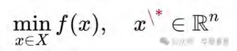
这种逻辑容易陷入局部最优陷阱，因为点的定义在不确定环境中几乎不可操作。
2. 约束集合（SIO逻辑）
目标SIO化对应的是约束优化：
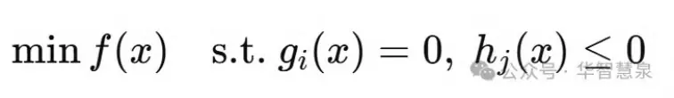
这里目标不是一个点，而是一个满足整体约束的集合。
“拿到书”的约束条件可能是：距离=0、握力≥阈值、姿态稳定；
“健康”的目标不是“体重=60kg”，而是“体脂、血压、睡眠、心理状态共同满足的整体条件”。
因此，目标SIO化在数学上意味着：目标不再是点，而是集合；不再是单一数值，而是整体约束。
五、管理学的启示：从KPI到SIO整体
目标SIO化的本体论革命，对管理学的意义尤为深远。
1. 从KPI逻辑到SIO逻辑
KPI的本质是object逻辑：把组织目标简化为一组数字，逐一达成。目标SIO化则指出，真正的目标是组织—市场—社会互动的整体生成，不能被简单地还原为KPI。
2. 从设定到生成
传统目标管理强调“设定目标”，仿佛目标可以由主体单方面规定。目标SIO化则强调“目标生成”：目标不是设定的，而是互动中发生的。管理者的任务不是制定目标，而是引导目标生成。
3. 从达标到整体优化
object逻辑下的管理，强调“达标”；SIO逻辑下的管理，强调“整体最优”。前者可能带来局部最优陷阱，后者才能保证组织与环境的协调发展。
六、案例分析
1. 教育
object目标：考100分。
SIO目标：学习者—知识—互动的整体生成，包括理解、提问、解答与应用。
2. 健康
object目标：体重60公斤。
SIO目标：身体—生活方式—环境的整体生成，包括体能、代谢、心理与社会支持。3. 企业
object目标：利润最大化。
SIO目标：组织—市场—社会的整体生成，包括创新、品牌、责任与长期竞争力。
七、小结
第一大革命的核心，是目标从object逻辑转向SIO逻辑。目标不再是外在客体，而是未来整体SIO；不再是静态点，而是动态生成；不再是数值指标，而是整体约束。这一革命，从本体论上重建了目标的存在方式，从数学上对应约束优化，从管理学上超越了KPI逻辑。
因此，目标SIO化不仅是哲学的突破，更是科学与管理的根本转折。它揭示目标是发生的整体，而非静止的物；是生命性的生成，而非机械的达标。这一革命，为第二大革命“意义最大化”奠定了坚实的基础。
第七章第二大革命：从价值最大化到意义最大化（价值论革命）
一、引言
在目标论的传统框架下，价值逻辑几乎总是以“最大化”为原则：学习要考到最高分，健康要达到理想体重，企业要实现利润最大化，国家要追求GDP的持续增长。这种逻辑看似理性和科学，实则把目标锁死在单一维度的静态数值上，使目标的内涵被严重削减。目标发生学的第二大革命，正是要突破这种局限。它指出：目标的价值逻辑必须从静态的价值最大化，转向动态的意义最大化。意义最大化并不是否定价值，而是通过三律的高效运行，使价值在过程中不断涌现，从而避免局部陷阱，保证整体最优。
二、价值最大化逻辑的局限
1. 价值静态化
在传统逻辑中，价值被预设为一个静态点：分数、体重、利润、GDP。这些点状数值成为唯一的评判标准。结果，目标失去了开放性和生成性，变成机械的达标。
2. 路径工具化
价值被锁定为终点，路径运行被简化为逼近目标的工具。学习沦为刷题，健康沦为节食，企业战略沦为短期财务操作。
3. 局部陷阱
静态价值最大化往往导致局部最优陷阱：
教育中，分数提高了，但创造力和独立思考能力下降；
健康中，体重达标了，但整体身体状态恶化；
企业中，利润增加了，但长期竞争力削弱；
国家中，GDP增长了，但社会不平等和环境破坏加剧。
因此，静态价值最大化逻辑在复杂系统中常常导致反效果。
三、意义最大化的提出
目标发生学提出：目标的价值逻辑应当是意义最大化。
1. 意义的定义
意义并不是单一的数值，而是三律运行的综合效应：
特征律：在混沌中不断创造新的差异；
自由律：在多路径纠缠中不断选择和生成可能性；
幸福律：在张力转换中不断释放满足与喜悦。
2. 意义的动态性
意义不是预设的，而是在路径运行中动态生成的。目标不是一个固定的价值点，而是一个不断涌现的意义流。
3. 价值的阶段化
在意义最大化的框架下，价值退为阶段性的指标。它不再是终极目的，而是意义运行中的局部结果。每个阶段性的价值达成，都只是整体意义生成的一个片段。
四、数学优化学的对应：单目标与多目标
1. 单目标优化（价值最大化）
传统逻辑对应的是单目标优化：
maxf(x)
这种优化模式往往容易陷入局部最优陷阱。
2. 多目标优化（意义最大化）
意义最大化对应的是多目标优化：
max(f1(x),f2(x),f3(x))
结果不是单一数值，而是 Pareto前沿，即一组动态平衡解。
在教育中，学习目标是知识、能力与兴趣的动态平衡；
在健康中，目标是体能、代谢与心理的动态平衡；
在企业中，目标是利润、创新与责任的动态平衡。
3. 动态优化（意义流动）
意义最大化不仅是多目标，而且是动态的：
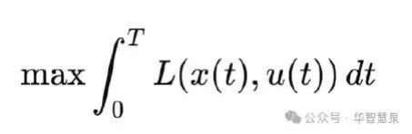
这里的优化目标是全过程的意义累积，而不是单一时刻的数值最大化。
五、管理学的启示
意义最大化的提出，对管理学具有三方面的启示：
1. 教育管理
不再以分数作为唯一目标，而是以意义最大化为导向，激发学生的创造力、自由度与幸福感。分数只是阶段性指标，而不是最终目的。
2. 企业管理
不再以利润最大化为唯一目标，而是以意义最大化为导向：既要创造创新价值，又要保障员工自由发展，还要承担社会责任。利润只是动态结果，而不是终极目标。
3. 国家治理
不再以GDP作为单一目标，而是以意义最大化为导向：兼顾经济发展、社会公平、环境可持续。GDP只是阶段性指标，而不是文明的本质。
六、案例分析
1. 跑步
价值最大化逻辑：跑5公里，达标即完成。
意义最大化逻辑：在过程中体验呼吸的节奏、身体的突破、心理的释放。公里数只是附属指标，真正的目标是意义的累积。
2. 学习
价值最大化逻辑：考100分，达标即完成。
意义最大化逻辑：在过程中不断提出问题、探索答案、体验顿悟。分数只是阶段性结果，真正的目标是知识意义的生成。
3. 企业战略
价值最大化逻辑：利润增长，达标即成功。
意义最大化逻辑：在过程中不断创新、提升社会价值、创造长期幸福。利润只是副产品，真正的目标是组织意义的扩展。
七、小结
第二大革命的核心，是目标的价值逻辑从静态的价值最大化转向动态的意义最大化。意义最大化保证目标不再陷入局部最优陷阱，而是在三律运行下实现整体最优。它在数学上对应多目标优化与动态优化，在管理学上超越了分数、利润与GDP的单一逻辑。
因此，意义最大化不仅是一种哲学命题，也是一种实践范式。它为教育、健康、企业与国家治理提供了新的方向：不再追逐僵硬的数值，而是在生命性的发生中生成意义。
第八章第三大革命：从整体实现到序列发生（实现论革命）
一、引言
在传统的目标逻辑中，目标的实现被理解为一种 整体性的、一次性的达标。无论是教育中的考试、健康中的减重、企业中的财务目标，还是国家的发展指标，目标总是被设定为“终点”，路径的意义就是不断接近该终点，直到最终完成。这种“整体实现”逻辑，是object目标论的自然延伸。
然而，在复杂系统与动态环境中，这种逻辑表现出明显的局限：它容易制造焦虑，压缩创造力，并使路径运行僵化。目标发生学的第三大革命正是要在实现论层面完成转折：目标实现必须从整体一次性的达标，转向阶段性涌现与实现的序列发生。
二、整体实现逻辑的困境
1. 一次性达标的僵化
在object逻辑下，目标只有在全程结束时才被视为“实现”。学习必须等到考试成绩揭晓，健康必须等到体重数值下降，企业必须等到年度财务报表完成。这种逻辑把目标压缩为一个“最后的时刻”。
2. 意义的推迟
整体实现逻辑导致目标的意义被推迟到终点：在过程中，个体与组织常常感受到的只是压力与焦虑，而非意义与幸福。学习的过程是痛苦的，健康的过程是压抑的，企业战略的过程是僵硬的。
3. 局部陷阱
整体实现逻辑容易使路径运行陷入局部陷阱：短期的指标达成掩盖了长期的整体失衡。例如，企业为了年度利润而忽视长期研发，国家为了增长率而牺牲环境。
三、序列发生学的提出
目标发生学指出：目标实现必须被理解为阶段性涌现与实现的序列发生。
1. 阶段性涌现
目标不是一开始就完整存在的，而是在路径运行中逐步涌现。每个阶段都会生成新的目标SIO，它们是最终目标的组成部分。
2. 阶段性实现
每个阶段目标在涌现后，都可以部分实现。这种实现不是终点达标，而是阶段性的完成与释放。
3. 序列的累积
整个目标的实现，不是一次性的“达成”，而是阶段目标涌现与实现的累积，最终收敛为整体最优。
四、数学优化学的对应：动态规划
1. 全程最优控制（整体实现）
传统逻辑对应的是一次性全程最优：
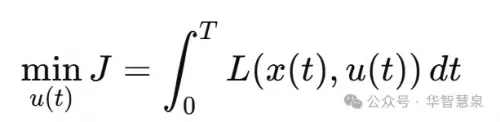
这种逻辑在复杂系统中常常不可解，且容易陷入局部最优。
2. 分阶段最优控制（序列发生）
序列发生对应的是动态规划：
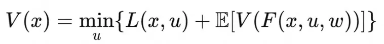
目标的实现被分解为阶段性子问题，每个阶段最优的累积，保证了整体最优。
3. 避免局部陷阱
动态规划的思想正是序列发生学的数学对应：通过阶段性目标的最优序列，实现全局目标的整体最优，避免局部陷阱。
五、管理学的启示
1. 教育
整体实现逻辑：考试分数是唯一目标。
序列发生逻辑：学习过程中的阶段目标——理解概念、提出问题、解决难题、应用迁移——都是目标的实现。
2. 健康
整体实现逻辑：减重到某个数值才算达成。
序列发生逻辑：体能恢复、代谢改善、睡眠优化、心理平衡，每个阶段目标的实现都是健康目标的部分完成。
3. 企业战略
整体实现逻辑：年度利润最大化。
序列发生逻辑：研发突破、市场进入、品牌建设、社会责任，每个阶段的目标涌现与实现，构成企业的长期生命力。
六、案例说明
跑步
整体实现逻辑：跑完5公里才算完成。
序列发生逻辑：第一公里的热身，第二公里的呼吸调整，第三公里的节奏流畅，第四公里的突破舒适区，第五公里的冲刺。跑步的目标不是终点，而是阶段性目标的序列发生。
知识创新
整体实现逻辑：完成一篇论文，才算创新。
序列发生逻辑：提出问题、构建框架、形成章节、展开案例、综合成文，每一步都是创新目标的阶段性实现。
七、小结
第三大革命的核心，是目标实现逻辑从整体一次性的达标，转向阶段性涌现与实现的序列发生。它在数学上对应动态规划，在管理学上超越了达标逻辑。序列发生学使目标不再是“等待终点的果实”，而是“在路径中不断绽放的花朵”。
至此，目标发生学的三大革命已经全面展开：
第一大革命：目标SIO化，本体论革命；
第二大革命：意义最大化，价值论革命；
第三大革命：序列发生，实现论革命。
这三大革命彻底重构了目标的本体、价值与实现逻辑，为方法论和管理学提供了新的三律启示。
插入章目标的外衣与内容
一、引言：目标的双重面孔
“目标”是人类社会运作的关键词汇。它贯穿于教育、管理、健康、政治、宗教乃至文明的每一个角落。人类几乎所有的努力，都围绕着目标设定与实现而展开。然而，当我们深入探究目标的本质，就会发现它具有一种“外衣与内容”的双重结构。
外衣：是人们日常可见的“价值形象的特征描述”。它通常以数字、指标、形象、符号的形式出现，看似清晰、直观，却往往只是目标的表层包装。
内容：则是路径运行中真正发生的 三律意义 ——特征律的创造，自由律的选择，幸福律的释放。
遗憾的是，人类文明长期沉溺于目标的外衣，把“分数”“体重”“利润”“GDP”这样的表征误认为目标的本体，而忽视了目标的真实内容。结果，目标沦为指标的奴役，路径成为机械的逼近，意义被严重压缩。
本章旨在揭示目标的外衣与内容的区别，批判外衣崇拜的幻象，并阐明目标必须回归三律的动态生成。
二、目标的外衣：价值形象的特征描述
1. 外衣的形成
外衣产生于人类对复杂过程的简化需求。当人类试图衡量目标时，往往把它抽象化为一种可见、可比、可控的形象。这些形象就是外衣。
在教育中，学习目标被简化为“分数”。
在健康中，生命目标被简化为“体重”。
在企业中，战略目标被简化为“利润”。
在国家治理中，发展目标被简化为“GDP”。
这些外衣的共同点在于，它们都是 特征的静态化描述。它们是SIO运行中某一差异稳定性的快照，而不是整体运行的真实。
2. 外衣的三大特征
1. 可视化：外衣往往是数字化、指标化的。它们以符号形式出现，便于展示和比较。
2. 简化性：外衣极度压缩复杂系统，把多维度的过程简化为单一的特征。
3. 稳定性：外衣给人以一种稳定、可控的幻象，好像目标在某个点上已经固定。
3. 外衣的作用
不可否认，外衣具有一定的功能：
它为交流提供便利；
它为管理提供可操作的工具；
它为评估提供标准。
然而，问题在于：外衣只是目标的表层，而非本体。当外衣被误当成本体时，就会引发严重的异化。
三、外衣崇拜的幻象与危害
1. 教育中的“分数外衣”
幻象：分数被视为学习的全部。
危害：学生在分数的奴役下刷题，缺乏创造与独立思考，学习变成单调的“达标”。
2. 健康中的“体重外衣”
幻象：体重被视为健康的全部。
危害：人们盲目节食、过度锻炼，忽视睡眠、心理、环境等整体因素，最终导致健康恶化。
3. 企业中的“利润外衣”
幻象：利润被视为企业的全部目标。
危害：企业陷入短期逐利，牺牲研发、品牌与社会责任，最终失去长期生命力。
4. 国家治理中的“GDP外衣”
幻象：GDP被视为国家发展的全部。
危害：增长数字掩盖了社会不平等、环境恶化与文化衰退，发展陷入单向度的陷阱。
5. 外衣崇拜的本质
外衣崇拜的本质，是 形式=本质的误认。它把特征的描述误当成本体，把影子当作真实。这种误认不仅制造幻象，还导致社会陷入指标驱动的恶性循环。
四、目标的内容：三律意义的生成
与外衣的虚幻相比，目标的内容是真实而深刻的。它不是表面的数字，而是路径运行中三律的动态生成。
1. 特征律的创造
目标的生成始于特征律的运行：
在混沌中浮现差异；
在差异中识别稳定性；
在稳定性中形成方向。
教育的目标在于理解新概念、发现新问题；健康的目标在于觉察身体信号、生成新状态；企业的目标在于识别市场差异、创造新模式。
2. 自由律的选择
目标的发生依赖自由律的运行：
在多路径的纠缠中展开选择；
在选择中生成新的目标SIO。
教育的意义在于培养学生的选择能力；企业的意义在于在不确定市场中做出战略抉择；文明的意义在于在多种价值之间寻找平衡。
3. 幸福律的释放
目标的实现最终体现为幸福律的运行：
张力被转化为动力；
转换带来释放；
释放生成幸福与意义。
学习中的顿悟、健康中的舒畅、企业创新中的成就感，都是幸福律的体现。
4. 内容的本质
目标的内容就是 三律意义的生成。这是目标的真正内核，也是目标的存在论基础。
五、外衣与内容的张力
目标之所以复杂，在于外衣与内容之间存在张力。
外衣为交流、管理与操作提供了必要的形式；
内容则承载着目标的生命性与意义生成。
问题在于，当外衣遮蔽内容，目标就会异化；当外衣服务于内容，目标才会生成。
1. 外衣不可或缺，但不能取代内容
分数可以存在，但它只是学习内容的阶段性映照；利润可以存在，但它只是企业意义生成的副产品。
2. 外衣必须被内容驱动
当外衣与内容脱节，社会就会陷入指标陷阱；当外衣由内容驱动，目标才会实现整体优化。
六、目标发生学的重建
目标发生学通过三大革命，重新界定了外衣与内容的关系：
1. 第一大革命：目标SIO化
目标的外衣不再是孤立object，而是整体SIO的符号映照。
2. 第二大革命：意义最大化
目标的内容不再是静态价值，而是三律意义的生成；外衣退为阶段性指标。
3. 第三大革命：序列发生
目标的实现不再是一次性达标，而是阶段性涌现与实现；外衣是过程中的符号标记，内容是序列运行中的意义累积。
七、案例综合
1. 学习
外衣：分数。
内容：理解、提问、解答、应用的意义生成。
2. 跑步
外衣：公里数。
内容：呼吸节奏、身体突破、心理释放的三律运行。
3. 企业战略
外衣：利润。
内容：创新、责任、长期价值的生成。
4. 国家发展
外衣：GDP。
内容：社会公平、环境可持续、文化繁荣的整体意义。
八、结论
目标的外衣是“价值形象的特征描述”，它是必要的，但绝不是目标的本体。目标的内容是路径运行中三律意义的发生，这是目标的真实。
当人类文明沉迷于外衣，目标就会异化为幻象；当外衣服务于内容，目标才会成为意义生成的路径。
目标发生学的贡献正在于此：它揭示了外衣与内容的关系，批判了外衣崇拜的幻象，重建了目标的存在论。由此，目标不再是僵硬的object，而是生命性的SIO整体发生；不再是指标的达标，而是意义的动态生成。
第四编三律目标发生学的数学支撑
第九章数学优化学的统一支撑
一、引言
任何一个成熟的理论，若想具有跨学科的说服力与可操作性，都必须在哲学思辨之外，找到形式化的表达与验证路径。目标发生学提出了目标的三大革命：目标SIO化、意义最大化、序列发生。这些革命从本体论、价值论、实现论三个层面重建了目标逻辑。然而，仅凭哲学表述还不足以打破传统object目标论的顽固影响。
数学优化学，正是目标发生学最坚实的外部支撑。因为优化问题的核心，也是“目标—路径—约束—实现”的关系结构。通过数学建模，我们不仅能够展示目标发生学的逻辑一致性，还能揭示它在实际应用中避免局部最优陷阱、保证整体最优的优势。
本章将逐一展示：三大革命如何在数学优化学中得到对应与支撑，并最终形成统一框架。
二、第一大革命的数学对应：点目标 → 约束集合
1. 传统逻辑
传统目标论把目标设定为一个点：
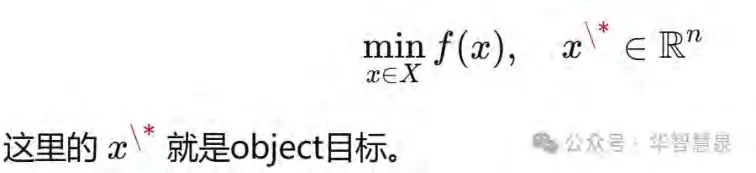
问题：
在不确定环境下，点目标几乎不可操作；
容易陷入局部最优陷阱。
2. 目标SIO化的逻辑
目标是一个整体SIO，而不是单点。它必须满足多维度的条件。
3. 数学对应：约束优化
目标的合理数学表达是约束集合：
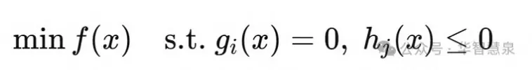
目标不是一个点，而是满足条件的集合；
教育目标：不仅是分数，还包括理解力、创造力、表达力；
健康目标：不仅是体重，还包括代谢、睡眠、心理状态。
👉 第一大革命在数学上得到支撑：目标=集合，而非点。
三、第二大革命的数学对应：单目标 → 多目标优化 + 动态优化
1. 传统逻辑：单目标最大化
maxf(x)
典型例子：利润最大化、分数最大化。问题：局部最优，单一化。
2. 意义最大化的逻辑
目标不是单一价值，而是三律意义的综合（创造+自由+幸福）。
3. 数学对应：多目标优化
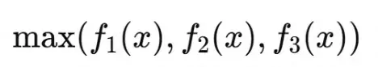
解不再是单点，而是 Pareto前沿。
教育：知识—能力—幸福的Pareto平衡；
企业：利润—创新—责任的Pareto平衡。
4. 动态优化
意义最大化不仅是多维度，而且是全过程：
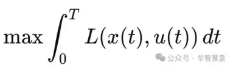
目标是全过程意义的累积，而非某一时刻的数值。
👉 第二大革命在数学上得到支撑：目标=多维度+动态，而非单一数值。
四、第三大革命的数学对应：整体最优 → 分阶段最优（动态规划）
1. 传统逻辑：整体最优
整体达标逻辑对应一次性全程最优：
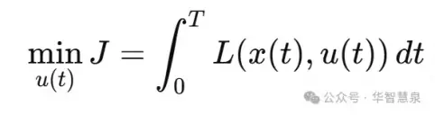
问题：在复杂系统中不可解，且容易陷入局部。
2. 序列发生学的逻辑
目标实现是阶段性涌现+实现的序列。
3. 数学对应：动态规划
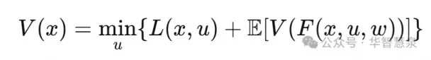
每个阶段的最优解，累积形成整体最优。
教育：阶段性学习目标（理解—问题—应用）；
健康：阶段性健康目标（体能—代谢—心理）；
企业：阶段性战略目标（研发—市场—品牌）。
👉 第三大革命在数学上得到支撑：目标实现=阶段序列最优，而非一次性全程最优。
五、综合模型：三律目标发生学的数学统一框架
我们可以用数学形式统一表达三大革命：
目标SIO化：
意义最大化：
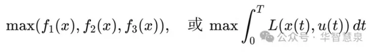
序列发生学：
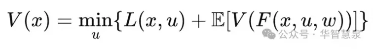
三者共同构成 目标发生学的数学支撑。
六、小结
目标发生学的三大革命，在数学优化学中分别对应：
第一大革命 → 约束优化（集合目标）；
第二大革命 → 多目标优化 + 动态优化（意义最大化）；
第三大革命 → 动态规划（序列发生）。
这一统一框架不仅避免了传统目标论的局部最优陷阱，也提供了全过程意义最大化的形式化工具。至此，目标发生学在哲学、数学、管理学三重维度上完成了自洽统一。
第五编三律目标发生学的管理学应用
第十章知识创新管理：从德鲁克的虚幻性到SIO发生
一、引言
知识创新是21世纪企业、科研机构和国家竞争力的核心来源。传统管理理论，特别是德鲁克提出的“目标动态管理”，虽然指出目标必须随着环境变化而调整，但由于依然停留在“主体中心主义”和“object目标论”的框架之中，导致目标管理在知识创新中的作用往往流于形式。
三律目标发生学为知识创新提供了一种新的管理框架，它能够揭示目标在创新过程中的发生逻辑，并避免德鲁克管理学的虚幻性。
二、德鲁克的虚幻性
1. 主体设定
德鲁克认为目标由管理者或知识工作者设定。目标的动态性来自主体的不断修正。
2. 缺乏发生机制
这种逻辑意味着目标的动态生成完全依赖人的意志与判断，缺乏结构性的生成机制。3. 结果虚幻
不同主体可能设定不同目标，缺乏一致性；目标的修正随意，导致碎片化。知识创新的目标动态管理，成为一种“修补object”的幻象。
三、三律目标发生学的解决方案
1. 目标SIO化
在知识创新中，目标不是“产品指标”或“项目KPI”，而是“人—知识—工具—环境”的整体SIO生成。目标不是事先设定的客体，而是创新过程中动态生成的整体。
2. 意义最大化
创新不是为了达成某个固定数值，而是为了最大化创造（特征律）、选择（自由律）、幸福（幸福律）。价值不是预设，而是在创新路径中涌现。
3. 序列发生
创新的目标不是一次性实现，而是阶段性涌现：
阶段1：提出问题 → 阶段目标=澄清问题；
阶段2：设计方法 → 阶段目标=方法成型；
阶段3：实验与验证 → 阶段目标=发现差异；
阶段4：知识重构 → 阶段目标=整体创新。
目标的动态管理在这里不是主体修正，而是SIO网络自然生成。
四、数学支撑：动态规划与Pareto优化
目标SIO化 → 对应约束集合：知识创新目标是整体条件的满足，而非点数指标。
意义最大化 → 对应多目标优化：创新必须兼顾科学性、可操作性、价值创造。
序列发生 → 对应动态规划：创新过程必须分阶段决策，逐步逼近整体创新。
这种数学支撑，保证知识创新中的目标不是碎片化修补，而是整体性生成。
五、案例说明
1. 企业研发
传统逻辑：研发目标是新产品的市场份额。
SIO逻辑：研发目标是“企业—市场—用户—技术”的整体生成。新产品只是外衣，核心是SIO网络的整体优化。
2. 学术研究
传统逻辑：研究目标是论文发表。
SIO逻辑：研究目标是“研究者—问题—方法—学界”的整体生成。论文只是结果，核心是知识意义的发生。
六、小结
知识创新管理的难题在于，目标往往被简化为object指标，动态管理沦为主体修正的虚幻性。三律目标发生学通过目标SIO化、意义最大化、序列发生，为知识创新提供了新的逻辑与数学支撑。目标的动态生成在这里是真实的发生，而不是虚幻的修补。
第十一章意义教育：学习目标的序列发生与意义最大化
一、引言
教育是目标管理问题最集中的领域。传统教育目标管理深受 object目标论 支配：学习目标被简化为“分数”“排名”，教师与学生的努力都围绕这些外衣展开。虽然这种模式在短期内能够提高可量化的成绩，但长期来看，它压缩了学习的创造性，削弱了学习的自由度，消解了学习的幸福感。
三律目标发生学为教育目标的重构提供了新的方向。它强调：学习目标必须从“外衣的分数”转化为“内容的三律意义”；从“整体一次性达标”转化为“阶段性目标的序列发生”；从“价值最大化”转化为“意义最大化”。这种转型不仅重建了教育的本体逻辑，也为教育实践提供了新的方法论。
二、教育中的外衣幻象
1. 分数目标的幻象
在传统教育中，学习目标往往被定义为“考到某个分数”。分数作为object目标，具有外在性（数字化）、静态性（固定值）、单一性（唯一标准）。
2. 分数逻辑的后果
学习路径被工具化：一切努力都被简化为刷题与背诵；
学习意义被推迟：学习过程充满痛苦，意义只在成绩揭晓时短暂显现；
教育价值被局部化：短期分数提升，但长期创造力和学习兴趣被牺牲。
3. 教育异化的根源
分数只是目标的外衣，而非内容。当外衣被误认为本体，教育就被异化为“指标的奴役”。
三、目标SIO化：学习的整体生成
教育的第一步改革，是把学习目标从object转化为SIO整体。
1. 学习目标是未来整体SIO
学习目标不是分数object，而是“学生—知识—互动”的整体生成。
理解一个概念，是“学生—知识—思维”的SIO；
提出一个问题，是“学生—课堂—问题”的SIO；
参与讨论，是“学生—同伴—交流”的SIO。
2. 学习目标的整体性
目标不是单一分数，而是多个维度的整体：认知、技能、情感、价值观。
3. 管理者（教师）的角色
教师的任务不再是“设定分数目标”，而是“引导学习目标SIO的生成”。
四、意义最大化：学习的核心逻辑
在目标发生学的第二大革命中，学习目标的价值逻辑必须从静态的“价值最大化”转向动态的“意义最大化”。
1. 意义的三律运行
特征律：在学习中不断创造差异，生成新的理解与问题；
自由律：在多样的学习路径中进行选择，体验自主性与能动性；
幸福律：在张力与困惑被转化为理解与顿悟时，体验幸福与满足。
2. 分数的地位
分数不是目标的本体，而是意义生成中的阶段性指标。
3. 意义最大化的教育优势
激发学生的学习兴趣；
培养创造力与批判性思维；
增强学习的幸福感与生命力。
五、序列发生：学习目标的阶段性生成
学习不是一次性达标，而是目标的阶段性涌现与实现。
1. 学习的序列逻辑
阶段1：理解一个概念；
阶段2：提出一个问题；
阶段3：解决一个问题；
阶段4：迁移与应用；
阶段5：创造与创新。
2. 阶段目标的价值
每个阶段目标都是一个独立的SIO发生，具有自身意义，而不是简单的“通向分数”。3. 整体最优
通过阶段性目标的累积与收敛，学习实现整体最优，避免“死记硬背—短期提分—长期失能”的局部陷阱。
六、案例分析
1. 语言学习
传统逻辑：目标=考试分数。
SIO逻辑：阶段性目标=掌握词汇 → 理解语法 → 进行对话 → 表达思想 → 创造文本。
2. 科学教育
传统逻辑：目标=解题正确率。
SIO逻辑：阶段性目标=理解原理 → 提出假设 → 设计实验 → 分析数据 → 构建模型。
3. 课堂实践
传统逻辑：目标=完成作业。
SIO逻辑：阶段性目标=发现问题 → 小组讨论 → 合作解决 → 分享成果 → 反思总结。
七、小结
教育的目标必须经历三大革命：
目标SIO化：学习目标是“学生—知识—互动”的整体，而不是分数object；
意义最大化：学习的真正价值是创造、自由、幸福的三律高效运行；
序列发生：学习目标的实现是阶段性涌现与实现的序列，而不是一次性达标。
意义教育因此成为教育的未来方向。它不再把学生培养成分数的奴隶，而是引导他们在三律的运行中生成意义，在序列发生中实现整体最优。
第十二章意义管理：企业战略的目标SIO化与长期生命力
一、引言
在企业管理领域，目标管理一直被视为战略制定与执行的核心。传统的企业目标管理，通常围绕着财务指标展开：利润、市场份额、股东回报。这些数字化的object目标，虽然在短期内能够带来效率与成果，却在长期中暴露出严重局限：企业陷入短期逐利，忽视创新与社会责任，最终丧失持续发展的生命力。
三律目标发生学为企业战略提供了一种新的目标逻辑：目标不是外在的object，而是“组织—市场—社会”的SIO整体生成；价值逻辑不是静态的利润最大化，而是动态的意义最大化；实现逻辑不是一次性的年度达标，而是阶段性目标的序列发生。这种“意义管理”，不仅回应了企业的长期生存难题，也为21世纪企业发展提供了新的生命范式。
二、object逻辑下的企业困境
1. 利润最大化的幻象
在传统逻辑中，企业的目标被设定为利润最大化。这一object目标具有外在性（财务指标）、静态性（年度数据）、单一性（财务维度）。
2. 局限与危害
短期化：企业倾向于牺牲长期研发与创新，以追求季度业绩；
异化：员工被视为工具，组织文化萎缩；
失衡：社会责任与环境可持续被忽视，企业与社会关系紧张。
3. 案例说明
不少跨国公司在过度追逐短期利润后，失去了市场竞争力。它们的战略目标是清晰的object，但正因为如此，企业陷入了“数值陷阱”，失去了整体生命力。
三、目标SIO化：战略目标的整体生成
企业目标必须从object转向SIO整体。
1. 目标是“组织—市场—社会”的整体
利润只是外衣，企业的真实目标是“组织—市场—社会”的整体生成：
组织内部：员工发展、创新文化；
市场关系：客户价值、品牌信任；
社会维度：责任承担、公共利益。
2. 整体性与系统性
目标不是KPI的累加，而是SIO整体的生成。企业战略必须把利润嵌入创新、责任、可持续等多维度整体中。
3. 管理者的角色
管理者的任务不是单纯设定利润目标，而是引导企业SIO整体的目标生成。
四、意义最大化：企业战略的价值逻辑
在三律目标发生学的第二大革命中，企业战略的价值逻辑从利润最大化转向意义最大化。
1. 特征律：创新驱动
企业必须在差异化中不断创造新的特征，形成创新优势。
2. 自由律：选择空间
企业必须保持战略灵活性，拥有多路径选择的自由，而不是锁死在单一市场或产品。3. 幸福律：责任与认同
企业必须通过责任承担与价值创造，释放社会张力，赢得员工与社会的认同，生成幸福感与归属感。
4. 利润的地位
利润不再是目标本身，而是意义运行中的副产品。它是企业创新、自由与责任在路径中涌现的数值映照。
五、序列发生：战略目标的阶段性生成
企业战略目标的实现，不是一次性的达标，而是阶段性目标的序列发生。
1. 战略的阶段逻辑
阶段1：研发突破（目标=技术SIO生成）；
阶段2：市场进入（目标=市场SIO生成）；
阶段3：品牌建设（目标=社会信任SIO生成）；
阶段4：社会责任（目标=责任与环境SIO生成）。
2. 阶段目标的意义
每一个阶段目标都是一个独立的SIO发生，具有自身意义，而不仅仅是通向利润的工具。
3. 整体最优
通过阶段性目标的累积，企业实现长期生命力，避免短期利润导向的局部陷阱。
六、案例分析
1. 创新型企业
以一家科技公司为例：
object逻辑：利润增长。结果，研发被压缩，长期失去竞争力。
SIO逻辑：阶段目标=技术创新 → 用户生态 → 品牌责任 → 长期利润。结果，企业实现长期生命力。
2. 可持续发展企业
一家食品公司：
object逻辑：成本最小化，结果食品安全与社会信任崩塌。
SIO逻辑：目标=营养健康 + 环境责任 + 品牌信任。利润成为副产品，企业实现长期繁荣。
七、小结
企业战略必须经历目标发生学的三大革命：
目标SIO化：企业目标是“组织—市场—社会”的整体，而不是利润object；
意义最大化：企业的真正价值在于创新、自由与责任，而利润只是副产品；
序列发生：企业战略目标的实现是阶段性涌现与实现的序列，而不是一次性达标。
意义管理因此成为企业战略的新范式。它超越了KPI逻辑，避免了利润陷阱，为企业提供了长期生命力。这不仅是企业管理的转型，也是文明可持续发展的必然要求。
第十三章意义健康：整体健康的目标SIO化与阶段性目标生成
一、引言
在个人与社会的实践层面，健康管理是目标管理问题最突出的领域之一。传统健康观念往往将目标简化为外衣式的object：体重、血压、血糖、胆固醇等具体指标。这些数值目标虽然便于监测，却掩盖了健康的复杂性与整体性。
结果是，人们常常为了“达标”而牺牲整体健康：节食减重却导致营养不良，过度运动却造成损伤，依赖药物却忽视生活方式。健康在这里被异化为指标的奴隶，意义丧失，幸福感消退。
三律目标发生学为健康提供了一种全新的理解：健康的目标不是单一object指标，而是“人—身体—生活方式—环境”的整体SIO生成；健康的价值逻辑不是静态数值最大化，而是动态的意义最大化；健康的实现不是一次性达标，而是阶段性目标的序列发生。这种“意义健康”是对健康目标逻辑的彻底革新。
二、object逻辑下的健康困境
1. 体重逻辑
健康目标被简化为“减到60公斤”。这种object目标具有外在性（数值）、静态性（固定值）、单一性（唯一标准）。
2. 达标困境
短期化：节食减重能快速达标，但身体代谢被破坏；
片面化：只关注体重，忽视心理健康、免疫系统、社会支持；
反效果：许多人在“达标”后反弹，健康状况反而恶化。
3. 数字崇拜的危害
健康的object化导致指标崇拜，健康被碎片化为若干数值，而生命整体性被遮蔽。
三、目标SIO化：健康的整体生成
健康目标必须从object转向SIO整体。
1. 健康目标是未来整体SIO
健康不是“体重数字”，而是“人—身体—生活方式—环境”的整体生成：
身体层面：体能、代谢、免疫力；
生活方式层面：饮食、运动、睡眠；
环境层面：空气、水质、社会关系。
2. 整体性
健康目标不是单一指标，而是多维度因素的综合优化。
3. 医生与个体的角色
医生与个体不是“设定指标”，而是“引导健康SIO目标的生成”。健康目标不是被规定的object，而是在互动中生成的整体。
四、意义最大化：健康的价值逻辑
健康的价值逻辑必须从数值最大化转向意义最大化。
1. 特征律：差异的创造
健康意味着不断发现身体的差异与特征，例如觉察早期信号、调节生活习惯。
2. 自由律：选择的生成
健康意味着在多种可能路径中进行选择，例如不同饮食方案、运动方式、心理调适。3. 幸福律：张力的释放
健康的实现不是冰冷的数值，而是张力被转化为幸福体验：运动后的舒畅、饮食的满足、心理的平衡。
4. 指标的地位
指标不是健康的本体，而是健康意义运行中的阶段性符号。
五、序列发生：健康目标的阶段性生成
健康的实现不是一次性达标，而是阶段性涌现与实现的序列发生。
1. 健康的阶段逻辑
阶段1：恢复体能（目标=体能SIO生成）；
阶段2：改善代谢（目标=代谢SIO生成）；
阶段3：优化睡眠（目标=心理与生理SIO生成）；
阶段4：提升整体生命质量（目标=身体—心理—社会的综合SIO生成）。
2. 阶段目标的意义
每一个阶段目标都是一个独立的SIO发生，具有自身意义，而不是通向“体重达标”的工具。
3. 整体最优
通过阶段性目标的累积，健康实现整体最优，避免短期减重或片面指标的局部陷阱。
六、案例分析
1. 减重案例
object逻辑：目标=减到60公斤。结果，节食伤身，体重反弹。
SIO逻辑：阶段目标=恢复饮食规律 → 建立运动习惯 → 优化睡眠 → 提升生命质量。结果，体重自然下降，健康长期维持。
2. 慢性病管理
object逻辑：目标=血糖达标。结果，依赖药物，忽视生活方式。
SIO逻辑：目标=饮食、运动、心理与药物的综合SIO生成。结果，整体健康水平提升。
3. 心理健康
object逻辑：目标=焦虑指数下降。
SIO逻辑：目标=自我觉察—社会支持—生活节奏的序列生成。结果，幸福感持续上升。
七、小结
健康目标必须经历三大革命：
目标SIO化：健康目标是“人—身体—生活方式—环境”的整体，而不是单一指标object；
意义最大化：健康的真正价值是创造、自由与幸福的三律高效运行，而指标只是外衣；
序列发生：健康目标的实现是阶段性涌现与实现的序列，而不是一次性达标。
意义健康因此成为健康管理的新范式。它超越了指标崇拜，避免了体重、血糖、血压的局部陷阱，为个体提供了长期生命力与整体幸福感。这不仅是医学的转型，也是文明的健康哲学。
第十四章 GPT时代的人–机合作目标管理的正典范式
一、引言：AI时代的目标困境
进入21世纪第三个十年，人工智能，尤其是大型语言模型（如GPT）的快速发展，正在深刻改变知识生产、组织管理与社会治理的方式。与以往的信息技术不同，GPT类模型不仅能够提供信息，还能参与知识的生成、语言的表达和思维的重组。它们不再是简单的“数据库”，而是具备类对话、类创造的伙伴。
然而，正是在这种全新的人–机互动关系中，传统目标逻辑的困境被进一步放大。人类在与GPT合作时，往往延续着 object目标论 与 主体中心主义 的旧逻辑。
首先，object目标化 的问题尤为明显。大多数用户把与GPT的合作目标，简化为“获得一个答案”。在这种逻辑下，目标被压缩为一个外在的object，例如“一段摘要”“一个结论”“一份报告”。这种目标的外衣看似清晰，却忽视了对话过程中涌现的思维链条、概念重构和新问题的生成。结果，人–机合作沦为机械性的“提问—回答”，而非真正的意义生成。
其次，主体中心主义 的局限依然存在。在大多数使用场景中，目标完全由人来设定，GPT只是被动响应的工具。人类主体认为自己是目标的唯一源泉，而机器只是执行的外在客体。这种逻辑导致目标动态性流于表面：人类频繁修正目标，但目标的生成缺乏内在的发生学机制。于是，目标变得相对化、碎片化，人–机合作缺乏整体方向。
再次，虚幻的动态性 加剧了困境。在对话中，用户常常不断调整目标——修改提问、改变方向、追加条件。这种表面的“动态”并不是目标的真实生成，而是对object幻象的反复修补。结果是：对话目标频繁变化，但缺乏一致性与整体优化，人–机合作效率不高，创造性不足。
因此，AI时代的核心难题在于：如何在新的知识生产场景中，重建目标逻辑，使人–机合作不再陷于object幻象与主体中心主义的局限，而能真正实现意义最大化与整体最优。这正是“三律目标发生学”可以提供启示的地方。它通过目标SIO化、意义最大化与序列发生，揭示了目标在复杂互动中的发生机制。将其应用于GPT时代的人–机合作，就能建立一种“正典范式”：目标不再是单一object，而是人–机–知识的整体生成；不再是静态达标，而是意义的动态最大化；不再是碎片化修正，而是序列性涌现与实现。
二、object目标论下的人–机合作幻象
在AI时代的人–机协作中，最普遍、也最具误导性的逻辑，依然是传统的 object目标论。它将目标理解为外在的客体，把复杂的知识生成过程简化为“获得一个结果”。在这种逻辑下，人–机合作表面上充满效率，实则陷入幻象，创造力和整体优化被严重削弱。
1. 目标简化为答案object
大多数用户与GPT对话时，设定的目标往往是“得到一个答案”。
学生的目标是“获得一道题的解答”；
研究者的目标是“得到一段文献综述”；
管理者的目标是“生成一份商业计划”；
企业的目标是“产出一份市场报告”。
这种目标逻辑的实质，是把目标还原为一个“外在的object”：答案、文本、数值、计划。目标因此失去了动态生成的维度，沦为静态的外衣。
2. 路径简化为问答循环
在object逻辑下，人–机合作的路径被极度压缩为“提问—回答”的循环。
人提出问题；
GPT生成回答；
人再次修正问题；
GPT再次输出答案。
这种循环是线性的、局部的，它忽视了人–机互动中可能涌现的结构性生成。例如，在学术研究中，GPT不仅可以回答问题，还可以生成新的研究思路；但在object逻辑下，这些可能性被遮蔽。
3. 局部陷阱的显现
object目标论的人–机合作不可避免地导致局部陷阱：
在学习中，学生依赖GPT获得标准答案，缺乏独立思考与探索，学习目标被压缩为“答案正确率”；
在研究中，学者使用GPT生成论文段落，却缺乏新问题的提出与概念的重构，研究目标被压缩为“论文数量”；
在企业中，管理者依赖GPT生成流程优化方案，却忽视战略创新与组织文化，目标被压缩为“效率提升”。
在这些局部陷阱中，人–机合作虽然在短期内显得高效，却在长期中削弱了学习、研究与组织的整体生命力。
4. 幻象的本质
object目标论下的人–机合作幻象，实质上是 目标外衣的崇拜：
外衣是答案、数值、报告；
内容是人–机互动中三律意义的生成；
当外衣被误当成本体，内容就被遮蔽，人–机合作失去了真正的意义。
这种幻象有两个直接后果：
1. 合作的工具化：GPT被视为“回答机器”，而非创造伙伴；
2. 目标的虚幻化：目标看似清晰（得到答案），实则空洞（缺乏意义）。
5. 小结
object目标论在人–机合作中的体现，就是把目标简化为外在object，把互动简化为问答循环，把成果简化为外衣符号。这种幻象不仅延续了传统目标论的局限，还放大了其危害：它让AI时代的人–机合作停留在低层次的效率工具化，无法进入高层次的意义生成与整体最优。
因此，必须用 三律目标发生学 来重建人–机合作目标逻辑。只有通过目标SIO化、意义最大化与序列发生，人–机合作才能摆脱object幻象，进入真正的创造性与文明性。
三、三律目标发生学在人–机合作中的应用
要走出object目标论的幻象，就必须把“三律目标发生学”引入人–机合作之中。三律目标发生学通过三次革命，重新定义目标的本体、价值与实现逻辑，为GPT时代的人–机互动提供了新的范式。
1. 第一大革命：目标SIO化
在object逻辑下，人–机合作的目标是一个答案object，例如“一段摘要”“一个计划”。在SIO逻辑下，目标则是 “人—机—知识”的整体SIO生成。
学习中，目标不是“得到答案”，而是“学生—GPT—知识点”的互动SIO，即在互动中理解概念、提出问题、验证思路；
研究中，目标不是“写一段论文”，而是“研究者—GPT—学术共同体”的整体SIO，即通过互动生成新的理论框架与研究路径；
企业中，目标不是“生成一份流程表”，而是“管理者—GPT—组织—市场”的SIO，即战略创新与组织文化的整体生成。
目标SIO化的意义在于：目标不再是孤立的结果，而是未来整体的生成。人–机合作因此从“工具使用”转化为“共同生成”。
2. 第二大革命：意义最大化
人–机合作的价值逻辑，必须从“效率提升”“答案正确”转化为 意义最大化。
创造性（特征律）：GPT能够在大规模数据与语言模式中发现差异，人类则在对话中识别新特征。两者结合，生成新的知识与思路。
自由性（自由律）：GPT提供多路径方案，人类在其中进行选择与重构，目标不再是单一路径的逼近，而是多路径探索的展开。
幸福性（幸福律）：在人–机互动中，问题的澄清、思维的突破、洞见的获得，都带来张力的释放与意义的满足。
因此，意义最大化是人–机合作的真正价值，而不是单一的“效率最大化”或“结果达标”。
3. 第三大革命：序列发生
人–机合作的目标实现，不是一次性得到答案，而是 阶段性目标的序列发生。
阶段1：问题澄清 ——目标是弄清问题的边界与本质。
阶段2：结构生成 ——目标是形成知识框架与逻辑结构。
阶段3：案例展开 ——目标是通过具体实例加深理解。
阶段4：综合创新 ——目标是将对话内容整合为新的思想与成果。
在这一过程中，每个阶段性目标都是一个SIO的生成与实现，最终累积为整体创新。
4. 小结
三律目标发生学在人–机合作中的应用，可以归纳为：
目标SIO化：目标=人–机–知识整体，而非答案object；
意义最大化：价值=创造、自由、幸福的三律运行，而非效率或达标；
序列发生：实现=阶段性涌现与实现的序列，而非一次性完成。
这三次革命，为GPT时代的人–机合作建立了新的目标逻辑，使合作不再停留在低层次的“问答工具化”，而进入高层次的“意义生成伙伴关系”。
四、数学优化框架的支撑
三律目标发生学不仅仅是哲学与管理学的重构，它也在数学优化学中获得了坚实的形式化支撑。数学建模能够揭示目标逻辑的运行机制，为人–机合作中的目标管理提供可计算、可分析、可优化的工具。这一支撑体现在三大革命的对应关系之中。
1. 目标SIO化 ↔ 约束集合
在传统object逻辑下，目标被视为一个点解，例如“生成一段摘要”，对应数学上的 点最优问题：
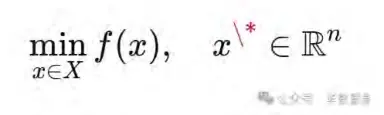
然而，人–机合作的目标并非单点，而是整体SIO条件的满足。例如，一个对话目标不只是“回答问题”，而是“人类—GPT—知识结构”的整体生成。数学对应形式是 约束集合优化：
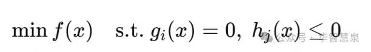
目标因此是一个满足整体约束的解集，而非孤立的点。
2. 意义最大化 ↔ 多目标优化 + 动态优化
object逻辑下，人–机合作的价值往往被简化为“正确率”或“效率”，对应数学上的 单目标优化：maxf(x)
但在三律逻辑下，意义最大化是多维度的：创造性（特征律）、自由性（自由律）、幸福性（幸福律）。对应的数学形式是 多目标优化：
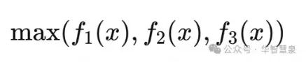
其结果不是单点，而是 Pareto前沿：在不同目标之间实现动态平衡。
同时，人–机合作的意义不是一次性达成，而是整个对话过程的动态生成。数学上对应 动态优化：
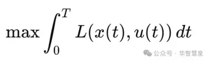
这里的目标是全过程意义的累积，而非单一时刻的结果。
3. 序列发生 ↔ 动态规划
传统整体实现逻辑对应 一次性全程最优控制：
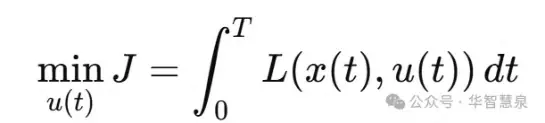
这种逻辑在复杂互动中往往不可解，且容易陷入局部最优。
三律目标发生学提出“序列发生”：目标是阶段性涌现与实现的累积。数学对应 动态规划（Bellman原理）：
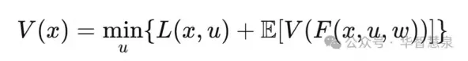
这一形式确保人–机对话中的每一阶段目标最优的累积，最终实现整体最优。
4. 小结
通过数学优化框架，三律目标发生学在人–机合作中的逻辑可以形式化表达：
目标SIO化 → 约束集合优化；
意义最大化 → 多目标+动态优化；
序列发生 → 动态规划。
这使得目标发生学不仅是哲学上的创新，也成为数学可计算的模型。对于GPT时代的人–机合作，这意味着目标管理不再依赖直觉与经验，而可以在理论上保证整体最优，避免局部陷阱。
五、正典范式的实践模型
在GPT时代，人–机合作的目标管理如何才能摆脱object幻象，走向意义最大化与整体优化？答案在于建立一种 正典范式（Canonical Paradigm）。这一范式不是经验性的技巧汇编，而是建立在三律目标发生学基础上的系统模型。它揭示人–机合作的目标如何被设计、运行、管理与优化。
1. 目标设计：从object到SIO整体
在正典范式下，目标不再是单一的“答案object”，而是 动态生成的知识SIO。
在学习中，目标不是“解出答案”，而是“学生—GPT—知识点”的互动整体；
在研究中，目标不是“生成一段文字”，而是“研究者—GPT—问题框架”的整体生成；在管理中，目标不是“得到一份报告”，而是“管理者—GPT—组织战略”的整体发生。目标设计的原则是：目标必须指向未来整体SIO，而不是静态object。
2. 路径运行：ΔSIO序列的推进
人–机合作的路径，不是“提问—回答”的线性循环，而是ΔSIO序列的动态推进：
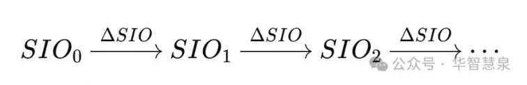
每一次互动都生成新的差异SIO，推动目标整体的发生。
初始提问是第一个ΔSIO；
GPT的回答是第二个ΔSIO；
人类的反馈与再思考构成新的ΔSIO；
最终收敛为整体目标SIO。
路径运行因此具有生成性，而不是工具性。
3. 阶段管理：阶段性目标的涌现
正典范式要求将目标实现过程分解为阶段性目标的涌现与实现：
阶段1：问题澄清 ——确定目标领域与范围，避免模糊；
阶段2：结构生成 ——形成逻辑框架与分析路径；
阶段3：案例展开 ——通过实例与应用，具体化框架；
阶段4：综合创新 ——整合结果，形成新知识或战略。
每一阶段目标都是一个独立的SIO发生，具有内在意义，而不是仅仅服务于最终答案。
4. 整体优化：意义最大化的指导
在正典范式下，目标管理的核心不是“效率”或“正确率”，而是 意义最大化。
在互动中，GPT提供多路径可能性，人类在其中选择与重构，保持自由；
在多轮对话中，新的特征不断浮现，保持创造；
在目标逐步实现过程中，张力被转化为理解与洞见的释放，保持幸福。
整体优化的原则是：价值指标退居为阶段性符号，意义生成才是全程驱动力。
5. 模型总结
这一正典范式可以总结为四个环节：
1. 目标设计：目标=未来SIO整体，而非答案object；
2. 路径运行：路径=ΔSIO序列，而非问答循环；
3. 阶段管理：实现=阶段性目标的涌现与实现，而非一次性终点达标；
4. 整体优化：原则=意义最大化，而非静态价值最大化。
在这一模型下，人–机合作不再是工具化使用，而是意义生成的伙伴关系。
六、案例分析
为了更清晰地理解GPT时代人–机合作目标管理的正典范式，我们可以从三个典型场景出发：学术研究、教育应用和企业战略。这些案例表明，当目标逻辑从object转向SIO，从价值最大化转向意义最大化，从整体达标转向序列发生，人–机合作便从“工具化使用”转化为“意义生成伙伴关系”。
1. 学术研究
传统逻辑：研究者使用GPT生成文献综述或论文片段，目标被简化为“得到一段文本object”。这种方式效率虽高，但缺乏创新，研究成果容易流于表面堆砌。
正典范式：研究者与GPT多轮互动，目标是“研究者—GPT—学术共同体”的整体SIO生成。
阶段1：提出研究问题，澄清研究边界；
阶段2：生成研究框架，探索不同理论路径；
阶段3：通过GPT生成案例或数据分析，拓展思路；
阶段4：整合对话结果，形成新的研究模型或理论命题。
在这里，论文文本只是外衣，真正的内容是知识结构和研究思维的意义生成。
2. 教育应用
传统逻辑：学生把GPT当作“答案机器”，目标是“得到标准解object”。结果，学生失去独立思考，学习被压缩为“提问—回答”的单循环。
正典范式：学生与GPT的互动目标是“学生—GPT—知识”的整体SIO生成。
阶段1：学生提出问题，GPT帮助澄清概念；
阶段2：GPT提供多种解题思路，学生在其中做选择；
阶段3：学生与GPT展开讨论，比较不同路径；
阶段4：学生在理解与顿悟中生成新的问题，形成学习闭环。
在这里，答案只是符号，真正的目标是学习过程中意义的涌现。
3. 企业战略
传统逻辑：管理者用GPT生成一份市场报告，目标被简化为“得到报告object”。这种方式的结果是短期效率提升，但缺乏长期战略创新。
正典范式：管理者与GPT的合作目标是“管理者—GPT—组织—市场”的整体SIO生成。阶段1：澄清战略问题，如“是否进入新市场”；
阶段2：生成多种战略框架，探索不同选择路径；
阶段3：结合案例与数据，模拟可能结果；
阶段4：综合信息，形成兼顾利润、创新与责任的动态战略。
在这里，报告只是外衣，真正的目标是战略意义与组织生命力的生成。
小结
三个案例表明：
object逻辑下，人–机合作的目标是答案、文本、报告——外衣化的object。
SIO逻辑下，目标是整体生成，意义在互动中不断涌现。
这正是GPT时代目标管理正典范式的核心：外衣是符号，内容是意义；目标是动态生成，而非静态达标；人–机合作是伙伴关系，而非工具使用。
七、结论：人–机合作的文明意义
GPT时代，人–机合作目标管理的正典范式，标志着目标论的一次历史性转折。传统的object逻辑，将目标简化为外在的答案、数值或报告，把人–机互动压缩为单一的工具关系。这种幻象在短期内制造了效率，却在长期中削弱了创造力与整体生命力。
三律目标发生学为此提供了系统性的解决方案。通过目标SIO化，目标被重建为“人—机—知识”的整体生成；通过意义最大化，目标的价值逻辑被重构为创造、自由与幸福的动态平衡；通过序列发生，目标的实现逻辑转化为阶段性涌现与累积最优。
由此，人–机合作不再是效率工具化，而是意义生成的伙伴关系。人类不再是单向的“设定者”，机器不再是被动的“执行者”，二者在SIO整体中共同生成新的知识、创新与文明形态。
这就是GPT时代的文明意义：人–机合作目标管理的正典范式，将目标从幻象转化为发生，从外衣转化为内容，从局部转化为整体。它不仅是管理学的革新，更是文明发展的新路径。
第十五章三律目标发生学的文明价值
一、引言
目标不仅是个人与组织的管理问题，更是文明发展的底层逻辑。古往今来，文明的演进与兴衰，都与人类如何理解和追求目标紧密相连。农业文明以“丰收”为目标，工业文明以“效率”为目标，信息文明以“增长”为目标。然而，这些目标大多是 object目标论 的产物：它们被简化为外在的数值、指标和物化客体。
这种逻辑在短期内推动了效率，却在长期中制造了局部陷阱：教育沦为分数崇拜，健康陷入指标奴役，企业沉溺利润追逐，国家迷信GDP增长。文明因此陷入“目标幻象”：目标看似清晰，实则遮蔽了生命的真实。
三律目标发生学提出了三次革命：目标SIO化、意义最大化、序列发生。它不仅重建了目标的本体论、价值论与实现论，也为文明发展提供了新的可能性。
二、避免局部陷阱
object逻辑的陷阱，在文明层面表现为“数字崇拜”：
教育：分数=学习；
健康：体重=健康；
企业：利润=成功；
国家：GDP=发展。
这种局部化导致文明陷入短期化与单维度的竞争，失去了整体优化的可能。
三律逻辑的优势，在于通过意义最大化来避免陷阱：
特征律：保证文明在混沌与差异中不断生成新的创新方向；
自由律：保证文明在多路径中不断选择与调整，避免单一路径锁死；
幸福律：保证文明通过张力的转换与释放，不断生成幸福与满足，而非陷入永无止境的“达标焦虑”。
意义最大化确保文明发展的动力，不是指标的局部最优，而是整体意义的发生。
三、统一哲学、数学与管理学
三律目标发生学的文明价值，还体现在它能够统一哲学、数学与管理学这三个长期割裂的学科逻辑。
在哲学上，它重建了目标的存在论（目标=SIO整体）、价值论（意义最大化）、实现论（序列发生）。
在数学上，它找到形式化支撑：约束集合对应目标SIO化，多目标优化与动态优化对应意义最大化，动态规划对应序列发生。
在管理学上，它为教育、企业、健康、人–机合作提供了应用范式，解决了德鲁克目标管理的虚幻性。
因此，目标发生学不仅是管理学的新理论，更是文明方法论的核心工具。
四、文明价值
1. 教育文明的转型
传统教育文明以“应试”为中心，分数是唯一目标。三律目标发生学将教育转型为“意义教育文明”：目标不再是分数object，而是学习者—知识—互动的SIO整体生成，意义最大化成为教育的本质。
2. 经济文明的转型
工业文明和信息文明都以利润与增长为目标。三律目标发生学推动经济文明转型为“责任与可持续文明”：目标不再是单一数值，而是组织—市场—社会的整体SIO生成。3. 技术文明的转型
现代技术文明长期受制于“工具理性”。AI的出现放大了这一逻辑。三律目标发生学将技术文明转型为“人–机协作文明”：目标不再是效率工具化，而是意义生成的伙伴关系。
4. 健康文明的转型
现代医学偏向“指标医学”，将健康简化为血压、血糖等object指标。三律目标发生学提出“意义健康”：目标不再是单一指标，而是身体—生活方式—环境的整体SIO生成。
五、小结
三律目标发生学的文明价值，可以总结为三个方面：
1. 避免局部陷阱：通过意义最大化，实现整体最优，避免数字崇拜的异化。
2. 统一学科逻辑：哲学、数学、管理学在目标维度上实现统一，打破学科割裂。
3. 推动文明转型：教育、经济、技术、健康等领域从object逻辑转向SIO逻辑，从价值最大化转向意义最大化，从整体达标转向序列发生。
由此可见，三律目标发生学不仅是一个理论框架，更是一种文明方法论。它让人类从“目标的幻象”中解放出来，走向“目标的发生”。
第十六章从德鲁克到三律目标发生学：
目标管理范式的历史转折
一、引言
在20世纪的管理思想史上，彼得·德鲁克（Peter F. Drucker）无疑是最具影响力的学者之一。他提出的“目标管理”（Management by Objectives, MBO），为工业经济时代的企业与组织提供了强有力的工具。MBO的核心是：通过设定清晰的目标，分解到部门与个人，再辅以监督和评估，提升组织的效率与效能。
这一思想的历史地位毋庸置疑。它是工业文明时期目标管理的集大成者。然而，随着社会进入知识经济与AI文明时代，德鲁克的范式暴露出其内在局限：目标依旧被设定为外在的object，动态管理依然依赖主体修正，缺乏目标发生的内在机制。
三律目标发生学的提出，标志着目标管理逻辑的一次历史转折。它不仅继承了德鲁克目标管理中“目标必须动态”的洞察，更超越了其object逻辑和主体中心主义，重建了目标的本体、价值与实现逻辑。
二、德鲁克范式的成就与困境
1. 成就
在工业经济时代，MBO极大提升了企业效率；
它推动了组织从“过程导向”转向“目标导向”；
它为绩效考核与激励机制提供了理论支持。
2. 困境
object逻辑：目标被设定为利润、产量等object指标；
主体中心主义：目标由管理者设定，动态调整依赖主体意志；
虚幻动态性：所谓“目标动态管理”，实质是object的频繁修正，缺乏内在发生机制；碎片化风险：目标被分解为KPI，但整体意义丧失。
德鲁克的范式，在工业文明中有效，在知识与AI文明中则显露出“虚幻性”。
三、三律目标发生学的超越
三律目标发生学通过三大革命，对德鲁克范式完成了系统超越：
1. 第一大革命：目标SIO化
德鲁克：目标=object（利润、分数、产量）。
三律：目标=未来整体SIO（组织—市场—社会，学生—知识—互动）。
超越之处：目标不再是外在客体，而是整体生成。
2. 第二大革命：意义最大化
德鲁克：目标的价值逻辑=静态最大化（利润、增长）。
三律：目标的价值逻辑=意义最大化（创造、自由、幸福）。
超越之处：价值退为阶段性指标，意义成为全程驱动力。
3. 第三大革命：序列发生
德鲁克：目标实现=全程达标，路径=逼近object。
三律：目标实现=阶段性涌现与实现，路径=ΔSIO序列累积。
超越之处：避免局部陷阱，实现整体最优。
四、历史转折
从德鲁克到三律目标发生学，标志着目标管理逻辑的历史转折。
1. 文明层面
德鲁克范式=工业文明的巅峰；
三律范式=后工业文明、AI文明的起点。
2. 管理学层面
德鲁克范式=object目标论的应用；
三律范式=目标发生学的实践。
3. 方法论层面
德鲁克范式=发现学与实现学；
三律范式=发生学。
这一转折不仅是管理学理论的更新，更是文明范式的更替。
五、展望
在未来，三律目标发生学将推动人类在多个领域完成转型：
教育：从应试教育转向意义教育，目标=学习意义的生成；
企业：从利润导向转向意义管理，目标=组织生命力与社会责任；
健康：从指标医学转向意义健康，目标=生命整体SIO生成；
人–机合作：从工具化使用转向伙伴式生成，目标=人–机–知识的整体创新。
由此，人类文明将在目标逻辑的层面实现根本转折：从德鲁克的object目标论，走向三律目标发生学的意义发生论。
六、小结
德鲁克目标管理范式在工业文明中发挥了巨大作用，但在知识与AI文明中显露虚幻性。三律目标发生学通过目标SIO化、意义最大化与序列发生，超越了德鲁克的object逻辑与主体中心主义，完成了目标管理范式的历史性转折。
这一转折标志着人类从“目标的幻象”走向“目标的发生”，从“数字的局部最优”走向“意义的整体最优”。它不仅是管理学的新篇章，更是文明史的新起点。
结论
一、目标的幻象与困境
纵观人类文明史，“目标”几乎无处不在。教育中的分数、健康中的体重、企业的利润、国家的GDP，这些外在的object目标曾经支撑了工业化和现代化的进程。然而，它们本质上都是“目标的外衣”——价值形象的特征描述，而非目标的真实内容。
object目标论的优势在于清晰与可操作性，但它也制造了深刻的困境：
僵化性：目标被固定为数值，路径沦为机械逼近；
片面性：目标被简化为单一维度，忽视整体与复杂性；
虚幻性：所谓“动态管理”，实则是object的反复修正，缺乏真实发生机制。
正因如此，教育沦为应试，健康陷入指标奴役，企业陷入短期逐利，国家治理迷信数字增长。文明陷入了“目标幻象”的陷阱。
二、三大革命的展开
为解决目标困境，本书提出了“三律目标发生学”的三大革命，从本体、价值与实现三个层面重建目标逻辑。
1. 第一大革命：目标SIO化（本体论革命）
目标不是object，而是未来整体SIO的生成。
本体层面：目标的存在方式从外在客体转向整体发生；
数学对应：点目标 → 约束集合；
管理应用：从KPI到SIO整体，从利润object到“组织—市场—社会”的整体生成。
2. 第二大革命：从价值最大化到意义最大化（价值论革命）
目标的价值逻辑不是静态数值最大化，而是三律意义的动态最大化。
特征律：创造差异；
自由律：展开选择；
幸福律：释放张力。
数学对应：单目标优化 → 多目标优化 + 动态优化；
管理应用：从分数崇拜到意义教育，从利润导向到责任与创新，从指标医学到意义健康。
3. 第三大革命：从整体实现到序列发生（实现论革命）
目标的实现逻辑不是一次性整体达标，而是阶段性目标的涌现与实现的序列发生。
数学对应：全程最优控制 → 动态规划（分阶段最优）；
管理应用：教育的阶段性学习目标，企业战略的分阶段创新，健康的逐步优化，人–机合作的多轮序列目标。
三大革命共同构成目标发生学的核心：目标是SIO整体的生成，价值是意义的动态最大化，实现是阶段性目标的序列发生。
三、哲学—数学—管理学的统一
三律目标发生学的独特之处，在于它打破了学科割裂，实现了三重统一：
1. 哲学统一
重建了目标的存在论（目标=SIO整体）；
重建了目标的价值论（意义最大化）；
重建了目标的实现论（序列发生）。
2. 数学统一
目标SIO化 → 约束优化；
意义最大化 → 多目标优化与动态优化；
序列发生 → 动态规划。
3. 管理学统一
教育：意义教育；
企业：意义管理；
健康：意义健康；
技术文明：人–机合作的正典范式。
哲学提供根基，数学提供形式化支撑，管理学提供实践落地。目标发生学由此成为跨学科的统一框架。
四、文明意义
三律目标发生学不仅是理论，更是文明方法论。
1. 教育文明
从“应试文明”转向“意义教育文明”。学习的目标不再是分数，而是意义生成。
2. 经济文明
从“利润/增长文明”转向“责任与可持续文明”。经济的目标不再是单一数值，而是组织—市场—社会的整体生成。
3. 技术文明
从“工具理性文明”转向“人–机协作文明”。AI时代的人–机合作目标逻辑，不再是效率工具化，而是意义伙伴化。
4. 健康文明
从“指标医学”转向“意义健康”。健康的目标不再是体重、血压等数字，而是生命整体SIO的生成与幸福的释放。
五、历史转折
从德鲁克到三律目标发生学，目标管理范式完成了一次历史转折。
德鲁克范式：目标管理=MBO，适应工业文明，成就效率，却陷入object幻象。
三律范式：目标发生学，适应知识与AI文明，实现意义最大化与整体最优。
这是目标逻辑从 发现学与实现学 向 发生学 的转折；
是文明从 数字崇拜 向 意义生成 的转折。
六、未来展望
未来的教育，将以意义最大化为核心，学习成为三律的发生；
未来的企业，将以长期生命力为核心，战略成为SIO整体的生成；
未来的健康，将以幸福为核心，医学成为生命意义的生成；
未来的技术，将以伙伴关系为核心，人–机合作成为文明意义的新源泉。
目标发生学不仅为管理学提供了新逻辑，更为人类文明提供了新方向。它让人类从“目标的幻象”走向“目标的真实”，从“指标的奴役”走向“意义的生成”。
七、总结
全书的主旨，可以浓缩为一句话：
目标不是object，而是SIO整体的发生；目标的价值不是数值最大化，而是意义最大化；目标的实现不是一次性达标，而是序列性的发生。
这就是目标发生学的三大革命。它为方法论与管理学提供了三律新启示，也为人类文明的未来开辟了新的路径。
后记
一个虚幻的目标：基于GPT的传统教育的效率提升
一、虚幻的目标：教育效率的幻象
当GPT等大型语言模型进入教育领域时，许多人立即提出一个看似“合理”的目标：利用GPT来提升传统教育的效率。在这一逻辑下，GPT被当作一个更强大的搜索引擎、一个更快速的解题机器、一个更精准的答疑助手。学生用它来更快地完成作业，教师用它来更快地批改试卷，学校用它来提高教学产出效率。
乍看之下，这一目标清晰且充满吸引力：GPT似乎可以帮助学生“更快地学会”，帮助教师“更高效地教”，帮助学校“降低成本、提高产出”。然而，这种设想实际上是一种 object目标论的幻象。它把GPT的作用简化为“效率工具”，把教育的目标简化为“效率提升”，从而遮蔽了教育的本质。
教育的本质不是效率，而是意义；教育的目标不是达标，而是发生。当GPT被纳入“效率提升”的框架时，它不仅无法发挥革命性作用，反而会加剧教育的异化。
二、类比：车与腿的革命
要理解这一幻象的荒谬性，我们可以借助一个生动的类比：车的到来与腿的使用。
1. 腿的SIO逻辑
在人类文明早期，腿承担了最基本的交通任务：行走、奔跑、负重。腿的价值被定义为“腿力”：跑得更快，走得更远，承载更多。教育中的“效率提升”逻辑，正是对“腿力”逻辑的重复：希望通过某种工具来让腿更强壮、更快速。
2. 车的到来
车的出现，并不是单纯提升“腿力”的效率。它不是帮助人“跑得更快”，而是彻底改变了腿的使用方式和任务配置。车把腿从重复性、机械性的长途奔走中解放出来，让腿转向更高层次的任务：灵活移动、微调平衡、完成车所不能完成的细节动作。车并没有提升腿力，而是减少腿力的使用，把腿从“价值腿”转向“意义腿”。
3. 类比到大脑与GPT
GPT对大脑的作用，正如车对腿的作用。GPT不是“增强大脑的逻辑能力”，而是替代了大脑在大规模信息处理与重复性逻辑推理中的角色。它把大脑从机械性、重复性的逻辑劳动中解放出来，使大脑能够转向更高层次的创造、自由与幸福。GPT不是提升脑力，而是减少脑力的负担，把大脑从“价值大脑”转向“意义大脑”。
三、三律目标发生学的解构
用三律目标发生学，我们可以更深入地揭示“教育效率提升”这一虚幻目标的荒谬。
1. 特征律的视角
教育的意义在于不断发现差异、生成特征。所谓“效率提升”的逻辑，是把目标固定为某个object（分数、答题速度），忽视了教育的创造性发生。GPT若被用来提高效率，实际上是抹杀特征律的运行：它让学生更快得到答案，而不是生成新问题。
2. 自由律的视角
教育的价值在于自由的选择与多路径探索。效率逻辑强调单一路径的加速，导致自由的压缩。GPT若被简化为“效率工具”，就会强化单一路径，减少探索空间，削弱教育的自由度。
3. 幸福律的视角
教育的目标在于幸福的释放——困惑转化为理解，张力转化为满足。效率逻辑把幸福推迟到分数达标的终点，过程沦为机械。GPT若被纳入这种逻辑，学习过程只会变得更加空洞和痛苦。
因此，基于GPT的“教育效率提升”是一种虚幻目标。它承诺更快，却制造更空；它声称解放，却加剧奴役。
四、真正的目标：教育的革命
如果我们遵循三律目标发生学的逻辑，GPT在教育中的真正目标并不是效率提升，而是 革命传统教育。
1. 革命object目标
教育的目标不再是分数、排名等object，而是“学生—教师—知识—环境”的整体SIO生成。GPT的加入，使目标SIO发生方式发生根本变化。
2. 革命价值逻辑
教育的价值不再是静态的“分数最大化”，而是“意义最大化”：
GPT使学生能够更快进入问题澄清与框架生成的阶段；
学生与GPT的对话成为多路径探索与选择的过程；
学习中的张力更快转化为幸福的释放。
3. 革命实现逻辑
教育不再是一场“一次性达标”的考试，而是一个“阶段性目标的序列发生”：
阶段1：澄清问题；
阶段2：生成框架；
阶段3：应用案例；
阶段4：创新整合。
GPT在其中不是答案机器，而是意义生成的伙伴。
五、GPT与教育文明的转折
GPT对教育的影响，并非“效率提升”，而是 文明转折。
1. 从价值教育到意义教育
传统教育把分数作为价值目标，GPT则推动教育转向意义发生：教育的目标不再是object，而是三律意义的整体生成。
2. 从工具教育到伙伴教育
传统教育把教师、教材当作工具，学生是执行者。GPT使教育转向“伙伴关系”：人–机–知识的整体互动。
3. 从达标教育到发生教育
传统教育强调一次性达标，GPT推动教育转向阶段性目标的序列发生。
六、车与腿的再诠释
车的出现，革命了腿：从“价值腿”到“意义腿”。
GPT的出现，革命了大脑：从“价值大脑”到“意义大脑”。
车并没有提升腿力，而是减少腿力：让腿从机械、重复的奔走中解放出来，转向灵活与创造性的使用。
GPT也不会提升脑力，而是减少脑力：让大脑从机械、重复的逻辑劳动中解放出来，转向创造、自由与幸福的意义生成。
因此，GPT对教育的作用，不是“帮助学生更快记忆、解题”，而是 彻底解放教育：从分数导向的价值逻辑，转向意义生成的文明逻辑。
七、后记的总结
本书贯穿始终的思想，在这一后记中得到呼应：
虚幻目标：基于GPT的教育效率提升，本质是object目标论的幻象；
真实目标：教育的革命——从价值教育到意义教育，从效率逻辑到意义逻辑，从object目标到SIO整体生成。
GPT的意义，不在于提升传统教育的效率，而在于革命传统教育的目标逻辑。这正是三律目标发生学对教育的最大启示。
附录一
基于GPT的学习和没有GPT的考试：
目标与评估的逻辑矛盾
一、引言
当GPT等大型语言模型进入教育实践后，许多学校与教师首先想到的目标是 “提升教学效率”。在这一逻辑下，GPT被当作一种加速器：它可以帮助学生更快地理解概念、生成答案、完成作业，从而在相同时间内获取更多知识。
然而，与此同时，教育体系的评估机制——特别是考试——仍然坚守着传统的object逻辑。考试强调的是 在没有GPT的条件下，由个体独立完成的答案正确率。学习过程有了GPT，评估过程却排除了GPT。结果，学习与评估之间形成了 目标与评价的逻辑矛盾。这一矛盾不仅使“教学效率提升”的承诺落空，还揭示了“基于GPT的教育效率提升”本身就是一个幻象。
二、目标的逻辑：学习与效率
在“GPT提升教育效率”的逻辑中，学习目标被简化为两个方面：
1. 知识掌握更快：学生通过GPT的帮助，更快理解概念、记忆知识点。
2. 作业完成更快：学生借助GPT生成答案，减少重复劳动。
这两个目标的共同点在于：它们都把 速度与数量 当作学习的核心价值。学习被定义为“更快完成更多”。
然而，从三律目标发生学的角度看，这是一种 价值目标的外衣，而非内容。
特征律：学习的本质在于生成差异和新问题，而不仅是更快获得答案；
自由律：学习的价值在于选择与探索，而不仅是效率加速；
幸福律：学习的意义在于张力的转化与顿悟，而不仅是机械的达标。
因此，把GPT学习目标设定为“效率提升”，本身就是一种object目标的幻象。
三、评估的逻辑：考试与独立性
与“学习效率”逻辑相对，传统考试坚持的是另一套评估逻辑：
1. 独立性：考试强调个体独立思考与解答，禁止使用外部工具。
2. 标准化：考试目标被定义为答案正确率，路径不重要，结果才是标准。
3. 一致性：所有学生在同一条件下评估，强调公平性。
这种逻辑与GPT学习目标形成直接冲突：
学习过程中依赖GPT，考试过程中却禁止GPT；
学习目标是“效率与速度”，考试目标是“独立与正确”；
学习强调“生成答案”，考试强调“再现答案”。
于是，教育系统在目标与评估之间，制造了一种 制度性张力：学习与评估逻辑无法统一。
四、逻辑矛盾的显现
这一目标—评估矛盾，至少表现为三个层面：
1. 效率与公平的冲突
使用GPT学习的学生，在考试中未必占优势，因为考试排除了GPT。
结果：学习效率越高，评估表现可能越差，因为学生失去了独立思考与构造答案的能力。
2. 学习与评估的脱节
学习目标是“效率最大化”；
评估目标是“独立正确性”；
两者逻辑不一致，学生在学习过程中培养的技能，无法在考试中转化为成果。
3. 教师与制度的错位
教师被要求利用GPT提升课堂效率；
考试制度却要求学生在没有GPT的情况下达标；
结果：教师与制度之间形成张力，教育陷入双重幻象。
五、三律目标发生学的解构
三律目标发生学能够揭示并解构这一幻象。
1. 从特征律看
学习的目标不是效率，而是特征生成。GPT的意义不在于加快答案获取，而在于帮助学生发现新问题、生成新结构。如果学习目标退化为“效率”，那么在没有GPT的考试中，学生反而失去了生成特征的能力。
2. 从自由律看
学习的意义在于多路径选择。GPT提供多种思路，学生可以在其中选择与探索。但如果学习被定义为“效率”，学生往往只选择最短路径。这种单一路径逻辑与考试中的“独立探索”发生冲突。
3. 从幸福律看
学习的幸福在于张力的转化：困惑—探索—顿悟。GPT如果被用来消除张力、直接提供答案，学习的幸福被剥夺。在考试中，学生无法再现幸福律的运行，表现自然低下。
因此，基于GPT的“学习效率提升”目标，与传统考试的“独立正确性”目标之间，形成了本质上的矛盾。
六、教育目标的重建
要解决这一矛盾，教育必须经历目标发生学的三大革命：
1. 目标SIO化
学习目标不是分数或效率object，而是“学生—教师—知识—环境”的整体SIO生成。GPT的意义是参与SIO生成，而不是单纯加快效率。
2. 意义最大化
教育的价值不是“效率”，而是“意义”。GPT必须服务于创造、自由、幸福三律的运行，而不是取代学生的学习过程。
3. 序列发生
教育目标的实现不是一次性达标，而是阶段性涌现。考试也必须相应改革：从一次性标准化考核，转向阶段性、多样化的目标评估。
七、小结
“基于GPT的学习效率提升”是一种虚幻目标，因为它与“没有GPT的考试”之间形成了无法调和的逻辑矛盾：学习强调效率，考试强调独立；学习依赖GPT，考试排除GPT。结果，学习与评估背离，教育陷入制度性张力。
附录二
基于GPT的“概念理解加速”的假象
一、引言
近年来，随着GPT等大模型进入教育场景，一个普遍的说法是：GPT可以加快学生对概念的理解。许多教师和学生的直观体验是：在GPT的帮助下，学生似乎能更快理解某个抽象概念，更快完成作业与习题，更快“掌握知识”。于是，一个新的教育目标被广泛传播——“利用GPT提升学生学习效率”。
然而，这其实是一个 假象。学生所谓“理解加快”，并不是学生独立完成了概念的掌握，而是 学生与GPT共同生成了概念SIO。这意味着目标的发生并非属于学生单独的SIO，而是“人–机”共同的SIO。一旦离开GPT，例如在传统考试中，学生往往难以独立完成相同的目标实现。
因此，“GPT提升学生学习效率”的说法，本质上是目标客体化带来的幻象。下面，我们用三律目标发生学深入解构，并借助“车与腿”的隐喻，说明这一现象的本质。
二、假象的逻辑：概念理解加速
1. 学习效率提升的表象
学生在与GPT互动时，提出问题，得到答案，并在GPT生成的解释中迅速抓住要点。表面看，概念理解速度加快了。
2. 目标的误读
这种表象实际上建立在object逻辑之上：
把“概念理解”当作一个外在object（一个静态的知识点）；
把“更快获得答案”当作“理解更快”。
3. 真实发生
实际上，学生理解的过程是 学生—GPT—知识点 的整体SIO发生。目标不是学生单独的，而是与GPT协作生成的。这是一种“合作发生”，而非“独立发生”。
4. 考试中的矛盾
当考试要求学生在没有GPT的条件下“独立完成”，学生往往无法重现与GPT协作时的目标生成。于是，所谓“效率提升”显露出其虚幻性。
三、三律目标发生学的解构
1. 特征律：差异的生成
学习的本质是通过差异识别生成特征。
在GPT帮助下，差异的识别是“人–机合作”的结果。GPT快速生成多种解释，学生选择其中的特征。
学生的“理解加快”并不是学生独立生成差异，而是依赖GPT提供差异选项。
一旦脱离GPT，学生缺乏独立生成差异的能力。
2. 自由律：选择的展开
学习的自由在于路径选择。
GPT提供多路径方案，学生在其中选择最优解。
“理解加快”的本质是：自由律的运作被转移为“人–机合作”中的路径选择。
但在考试中，GPT不在场，自由律无法展开，学生陷入单一路径的困境。
3. 幸福律：张力的转化
学习的幸福在于张力的转换与顿悟。
在与GPT合作时，学生的困惑很快被GPT化解，张力直接被机器转化。
学生感受到“轻松”，误以为自己完成了顿悟。
然而，这种幸福并不是学生独立实现的，而是GPT替代了张力的消化。考试时，缺乏GPT的支持，学生无法再现这种转化过程。
因此，所谓“概念理解加速”，只是GPT协助下的目标SIO发生，而非学生独立的目标实现。
四、类比：车与腿的隐喻
要进一步说明这一假象，可以借助“车与腿”的隐喻。
1. 腿的逻辑
在人类原始社会，腿的目标是“走得更远、更快”。腿力被等同于交通效率。
2. 车的到来
车的出现，并不是提升“腿的效率”。车并没有让人跑得更快，而是彻底改变了腿的任务配置：
腿被从“长途奔走”的重复性SIO中解放出来；
腿转向更高层次的意义任务，如控制车、进行微调、实现灵活动作。
3. 大脑与GPT的类比
大脑在传统教育中承担了大量重复性的逻辑思维与信息处理，就像腿承担长途奔走。GPT的出现，就像车的出现。
它不是提升“脑力效率”，而是取代了大脑在重复性、机械性的逻辑思维任务中的角色。
GPT把大脑从“价值大脑”（强调逻辑计算能力）的SIO中解放出来，转向“意义大脑”（创造、自由、幸福的生成）。
4. 教育的误解
如果我们把GPT理解为“提升大脑效率”的工具，就等于把车理解为“提升腿力”的工具。这是object逻辑的错觉。
车没有提升腿力，而是革命了腿的任务配置；
GPT没有提升脑力，而是革命了大脑的任务配置。
因此，GPT的教育意义不是“提升学生的学习效率”，而是 革命教育的目标逻辑：让大脑从机械性的逻辑劳动中解放出来，把教育从“价值教育”转向“意义教育”。
五、教育的重建：从假象到意义
1. 目标SIO化
教育目标不是“分数object”，也不是“效率object”，而是“学生—教师—知识—环境”的SIO整体生成。GPT必须被纳入SIO整体，而不是被当作加速工具。
2. 意义最大化
教育价值不在于速度，而在于意义。GPT必须服务于创造、自由、幸福，而不是取代学生的学习过程。
3. 序列发生
教育实现不是一次性达标，而是阶段性目标的涌现与实现。GPT的作用在于丰富路径、增加差异，而不是简单加快答案获取。
六、小结
“GPT使学生概念理解加速”的说法，本质上是 object目标论的幻象。学生所谓的“加快”，其实是与GPT合作完成了概念SIO，而非学生独立完成。一旦进入考试环境，脱离GPT，学生无法独立生成相同的目标实现，矛盾与困境立刻显现。
附录三
GPT学习效率的真实与虚幻：
车与腿、大脑与意义的隐喻
一、引言：一个充满张力的命题
当GPT进入课堂与学习场景，最直观的体验是：学生的学习效率提升了。许多教师惊讶于学生能够在极短的时间内“理解”某个概念，快速写出文章，甚至完成复杂的解题。这种现象似乎昭示着教育的一次“效率革命”。
然而，三律目标发生学提醒我们：这一结论既真实，又虚幻。真实之处在于，学习确实变得更快；虚幻之处在于，这种“快”并不是学生自身认知系统的加速，而是 “人–GPT合作体” 整体的效率提升。换句话说，是“交通方式变了”，而不是“腿更强了”。
这正如车的出现：交通效率确实大幅提高，但并不是腿力被增强，而是腿被解放出来，交由车承担长途奔走。GPT在学习中，正是这样的“车”。
二、学习的三律过程
为了理解这一矛盾，我们先重申学习在三律目标发生学下的发生过程：
1. 特征律：学习始于混沌。学生面对不理解的概念，充满模糊与不确定。在尝试中，逐渐识别差异，稳定特征，最终形成概念理解。
2. 自由律：学习继续于自由。学生在不同路径中探索、比较、选择。在多种思路的纠缠中，最终做出选择，激发新理解。
3. 幸福律：学习完成于幸福。困惑（张力）被逐渐转化为理解（转换），并在顿悟时释放为满足与喜悦。
传统学习的价值，恰恰在于 学生亲身经历了这三个阶段。
三、GPT的介入：三律的“直通车”
当GPT进入学习过程时，情况发生了根本改变。
1. 从混沌到涌现，跳过自组织
传统：学生必须在混沌中反复试探，通过自组织逐渐形成差异稳定性。
GPT：直接提供结构化的解释，把学生从混沌中“拉到涌现”，省略了自组织的艰难过程。
结果：学生体验到“理解更快”，但特征律的训练被部分替代。
2. 从纠缠到激发，跳过选择
传统：学生在不同思路中徘徊，比较、评估、抉择，最终选择一条路径。
GPT：直接生成最优答案或几条整理后的思路，替代了学生的选择过程。
结果：学生体验到“迅速激发”，但自由律的运行被外包给GPT。
3. 从张力到释放，跳过转换
传统：学生必须忍受困惑的张力，经过思维转化，才能迎来顿悟与满足。
GPT：直接给出答案，几乎“瞬间释放”张力，学生跳过了转换的过程。
结果：学生体验到轻松，但幸福律的价值性体验被削弱。
于是，GPT在学习中为学生提供了一条“三律直通车”：
从混沌直接抵达涌现；
从纠缠直接进入激发；
从张力直接跳到释放。
四、车与腿的隐喻
这一现象，可以用“车与腿”的隐喻更直观地说明。
1. 传统交通：腿的三律运行
特征律：人在长途步行中不断感知地形、差异与路标；
自由律：在岔路口反复选择，尝试不同路径；
幸福律：在艰难跋涉后抵达终点，张力释放为成就感。
腿的价值在于：它不仅是交通工具，更是学习与训练的场所。
2. 车的到来：交通直通车
车一旦出现，人不再需要步行完成长途，效率显著提高。
混沌与自组织（探索地形）被车的导航替代；
自由与选择（岔路探索）被车的路径规划替代；
张力与转换（艰难跋涉）被车的舒适驾驶替代。
结果：交通效率提升了，但不是腿力的提升，而是 “车–人”合作体 的交通效率提升。
3. GPT与大脑
GPT与大脑的关系，正如车与腿。
GPT替代了大脑在重复性、结构化逻辑推理中的部分功能；
学习效率提升了，但并不是“脑力增强”，而是“人–GPT合作体”的效率提升。
五、效率的真实与虚幻
基于此，我们可以更清晰地理解“GPT提升学习效率”的真实与虚幻：
1. 真实之处
人–GPT合作体的效率确实提升了。概念理解、作业完成、论文写作，都能在更短时间内完成。这一点毋庸置疑。
2. 虚幻之处
如果把这种合作体效率，误读为学生个人认知系统效率的提升，就是虚幻。
学生并没有更快经历“混沌—自组织—涌现”；
学生并没有更快完成“纠缠—选择—激发”；
学生并没有更深体验“张力—转换—释放”。
因此，学习的效率提升，并不属于学生个体，而属于“人–机整体”。
六、考试的悖论
这一虚幻目标在考试中暴露得尤为明显。
学习阶段：学生依赖GPT，概念理解似乎“加速”。
考试阶段：学生被要求脱离GPT，独立完成任务。
结果：学习与评估逻辑冲突。学生的“效率”无法转化为考试中的独立表现。
这就像一个长期乘车的人，被要求参加“长跑测试”：交通效率的提升，并不等于腿力的提升。
七、三律目标发生学的启示
1. 目标SIO化
教育目标不是“效率object”，而是“学生—教师—GPT—知识”的SIO整体。学习必须被理解为合作体的发生，而不是个体效率的加快。
2. 意义最大化
教育价值不在于“效率最大化”，而在于“意义最大化”。GPT的真正作用是：帮助学生更快抵达“意义生成”的场所，而不是替代学生完成意义本身。
3. 序列发生
教育目标的实现是阶段性的。GPT应当作为“阶段目标涌现的伙伴”，而不是“终点答案的提供者”。
八、结论
教育不能再停留在“提升效率”的虚幻目标，而必须进入“革命教育”的真实目标。GPT不是工具性的增强器，而是目标逻辑的转折点：它把大脑从机械逻辑中解放出来，让教育从“价值教育”转向“意义教育”。